🗼Tokio09.–16.08. · 10 Tage/Gruppen · 66 Spots (davon 15 🍽)▸
Montag, 10.08. T1 · „Vor der Haustür“ — Shinjuku5 Spots · 2 🍽▸
Mo 10.08. (jetlag-schonend). Alles fußläufig/1 Bahn vom Hotel. Gyoen liegt jetzt auf T2 (montags zu) — dafür startet ihr entspannt im Yoyogi Park.
🚶 Fußweg 1 von 4 · rund um Yoyogi Park Nr. 1
🗺 Yoyogi Park in Google Maps🚶 Fußweg 2 von 4 · rund um Tokyo Metropolitan Government Building Nr. 2, 3, 5, 6
🗺 Fußweg 2 in Google Maps — Route & Zoom🚶 Fußweg 3 von 4 · rund um Koenji Nr. 4
🗺 Koenji in Google Maps🚶 Fußweg 4 von 4 · rund um L'Occitane Café Shibuya Nr. 7
🗺 L'Occitane Café Shibuya in Google MapsDer Tag zerfällt in 4 Fußwege — zwischen den Blöcken fahrt ihr (Bahn/Bus/Taxi). Jeder Block hat seine eigene Karte und seinen eigenen Maps-Link, damit nichts rausgelöscht werden muss.
1🌳 Yoyogi ParkGroßer Stadtpark — der ruhige Start
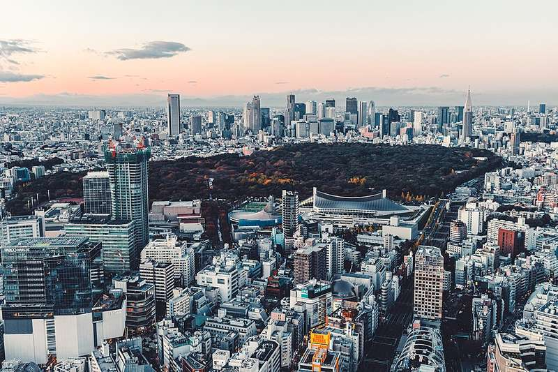
Weite Wiesen und viel Schatten, nur eine kurze Bahnfahrt südlich von Shinjuku. Perfekt für den jetlag-schonenden Auftakt: Konbini-Kaffee holen, ankommen, treiben lassen. Morgens angenehm leer und im August die kühlste Stunde des Tages.
⏰ immer offen · gratis · 🚇 ~1 Station / kurzer Weg ab Shinjuku
2🌆 Tokyo Metropolitan Government BuildingGratis-Aussichtsdeck in 202 m Höhe
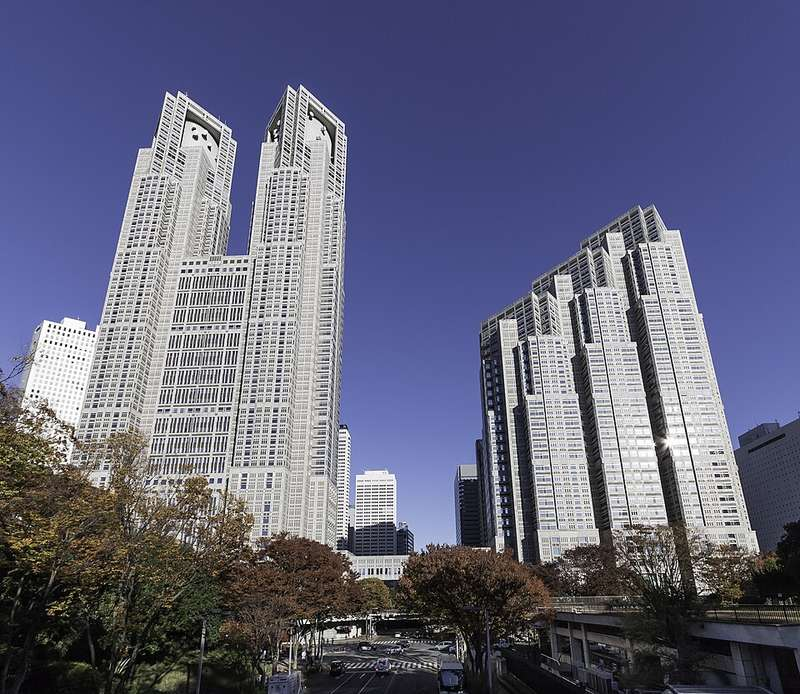
Doppelturm der Stadtregierung mit kostenlosem Observatorium im 45. Stock — bei klarem Wetter bis zum Fuji. Abends schöner Stadtlichter-Blick, und ihr spart euch für den Anfang ein bezahltes Deck.
⏰ Südturm 9:30–22:00 (Einlass bis 21:30), Ruhetag 1.+3. Dienstag · Nordturm nur 9:30–17:30 (Einlass bis 17:00), Ruhetag 2.+4. Montag · gratis · 20–30 Min Anstehen · Aufzug im 1. OG des Ersten Hauptgebäudes · ~10 Min zu Fuß
3⛩ Hanazono-SchreinRoter Inari-Schrein zwischen Hochhäusern
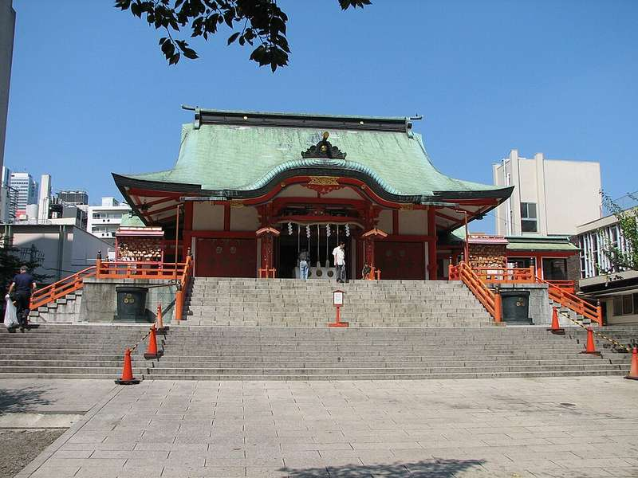
Kleiner, jahrhundertealter Schrein, der mitten im Vergnügungsviertel überlebt hat — rote Tore, Laternen, oft Flohmarkt am Sonntag. 5-Minuten-Stopp, aber ein schöner Kontrast zu Kabukicho nebenan.
⏰ rund um die Uhr · gratis
4🏘 KoenjiVintage- & Indie-Viertel
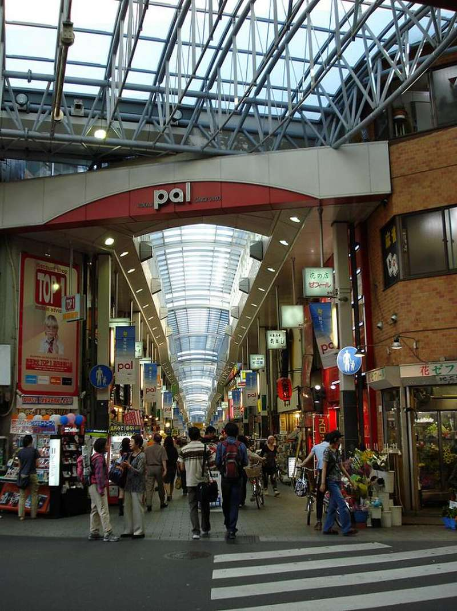
Tokios Alternativ-Ecke: Secondhand-Läden, Plattenläden, kleine Kneipen unter den Bahnbögen und die überdachte PAL-Einkaufsstraße. Nachmittags hinfahren, treiben lassen — hier ist kaum Tourismus.
🚇 Chuo-Linie ab Shinjuku ~8 Min · Läden öffnen meist erst ab ~12 Uhr
5🍸 Golden Gai~200 Mini-Bars in sechs Gassen
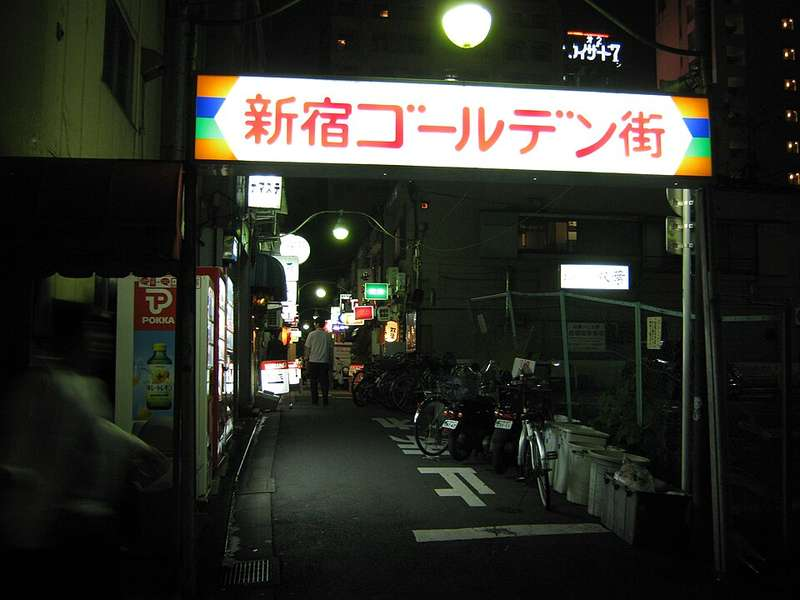
Legendäres Bar-Viertel aus der Nachkriegszeit: winzige Kneipen mit 5–8 Plätzen, jede mit eigenem Thema (Jazz, Punk, Film …). Viele sind ausdrücklich touristenfreundlich (Schilder an der Tür), manche nur für Stammgäste — einfach weiterziehen. Cover-Charge von ¥500–1.000 (~€3–6) ist normal und steht meist außen dran.
⏰ ab ~21 Uhr lebendig · direkt neben Kabukicho · Bargeld mitnehmen
🍽 Essen in der Gegend
6✅ Tonkatsu Niimura HontenWart ihr — Tonkatsu-Institution seit 1961 🐖
Belegt über den Kontoauszug: ¥9.600 (~€53) für zwei. Das Stammhaus liegt Kabukicho 1-23-10, keine 3 Minuten vom Hotel — panierte Schweinekoteletts, den Laden gibt es seit August 1961.
✅ besucht am Mo 10.08. · ¥9.600 (~€53) zu zweit · 3 Min zu Fuß vom Hotel
7✅ L'Occitane Café ShibuyaWart ihr — Kaffee mit Blick auf die Kreuzung ☕
Belegt über den Kontoauszug: ¥1.960 (~€11). Das Café liegt im ersten Stock direkt über der Shibuya-Kreuzung — der Klassiker, um das Gewusel von oben zu beobachten. Passt zu eurer vorgezogenen Shibuya-Runde am ersten Tag.
✅ besucht am Mo 10.08. · ¥1.960 (~€11)
Dienstag, 11.08. T2 · „Skytree & Ost-Tokio“ — Oshiage / Asakusa2 Spots · 2 🍽 · 🎌 Feiertag · 🌀 Taifun▸
Di 11.08. ✅ ERLEDIGT. Tag drehte sich komplett nach Ost-Tokio, weil der Skytree-Slot auf 09:00 gebucht war. 🎌 „Bergtag“ = Feiertag. 🌀 Taifun 15 „Chan-hom“ zog über Kanto: Böen bis 35 m/s, Regen ab 12–13 Uhr → ab ~14:00 zurück nach Shinjuku, Kaiserpalast-Gärten an diesem Tag gestrichen.
🚶 Fußweg 1 von 4 · rund um Tokyo Skytree Nr. 1
🗺 Tokyo Skytree in Google Maps🚶 Fußweg 2 von 4 · rund um Senso-ji & Nakamise Nr. 2
🗺 Senso-ji & Nakamise in Google Maps🚶 Fußweg 3 von 4 · rund um Hokkaido Ramen Himuro Nr. 3
🗺 Hokkaido Ramen Himuro in Google Maps🚶 Fußweg 4 von 4 · rund um Parasite Kabukicho Nr. 4
🗺 Parasite Kabukicho in Google MapsDer Tag zerfällt in 4 Fußwege — zwischen den Blöcken fahrt ihr (Bahn/Bus/Taxi). Jeder Block hat seine eigene Karte und seinen eigenen Maps-Link, damit nichts rausgelöscht werden muss.
1🗼 Tokyo Skytree ⭐✅ Gebucht: Einlass 09:00–09:29
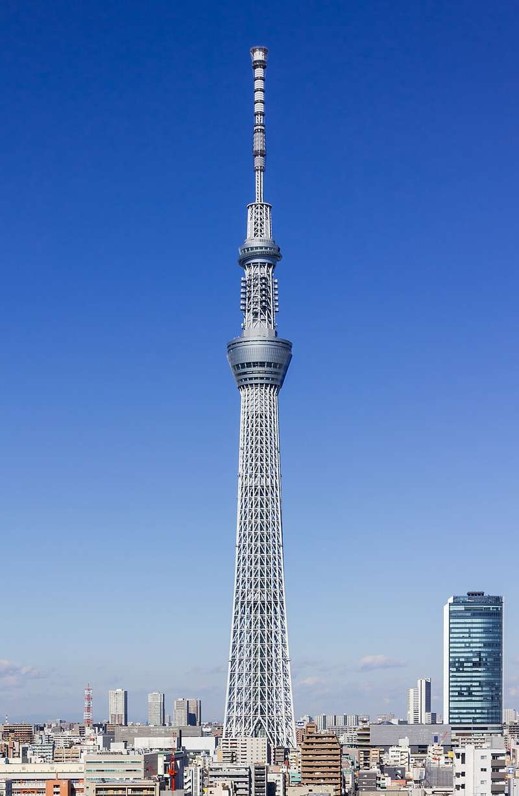
Höchster Turm Japans, 634 m. Ticket für Tembo Deck + Tembo Galleria, 2 Erwachsene, über Headout — nur am 11.08. gültig, kein Umbuchen. ⚠ Bei Sturm werden die Aussichtsebenen gesperrt; deshalb der frühe Slot vor dem Taifun. Unten die Solamachi-Mall als klimatisiertes Ausweichprogramm.
✅ Buchung HEADOUT-20260811-8QEQ · QR NICHT im PDF, kommt über den Voucher-Link (braucht Internet) · unten Solamachi-Mall
2🛕 Senso-ji & NakamiseTokios ältester Tempel (seit 628)
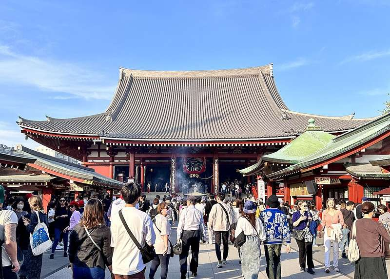
Durch das Kaminarimon-Tor mit der Riesenlaterne, die Nakamise-Einkaufsgasse hoch (Snacks: Ningyo-yaki, Senbei) zur großen Halle mit fünfstöckiger Pagode. 15 Min zu Fuß über den Fluss vom Skytree. Die überdachte Nakamise war an diesem Tag das Regen-Backup.
⏰ Gelände 24 h, Halle 6–17 Uhr · gratis · Nakamise überdacht
🍽 Essen in der Gegend
3Hokkaido Ramen HimuroMichis Tipp: Miso-Ramen für ~€6 🍜
Hokkaido-Style-Miso-Ramen, kräftig und günstig (~¥999). Liegt in Kinshicho, 1–2 Min von der Station — auf der Skytree-Seite des Flusses. Offen bis 4 Uhr nachts, falls der Tag lang wird.
⏰ bis 4 Uhr nachts · ~¥999 (~€6) · 🚇 Kinshicho, 1 Station vom Skytree
4✅ Parasite KabukichoWart ihr — Bar im Taifun-Rückzug 🍸
Belegt über den Kontoauszug: ¥6.300 (~€35). Passt exakt zum Ablauf des Tages — nach Skytree und Asakusa ging es wegen Chan-hom ab ~14 Uhr zurück nach Shinjuku, und der Abend fand in Kabukicho statt.
✅ besucht am Di 11.08. abends · ¥6.300 (~€35) · Kabukicho, nah am Hotel
Mittwoch, 12.08. T3 · „Waschtag“ — alles unter Dach: Ueno / Akihabara / Shibuya Sky4 Spots · 3 🍽▸
Mi 12.08. ✅ ERLEDIGT. ~50 mm Regen angesagt → bewusst als reiner Indoor-Tag gelegt: Museen, Arkaden, abends das gebuchte Shibuya Sky. Akihabara spätestens ~17:45 verlassen, sonst wird der Sprung quer durch die Stadt knapp.
🚶 Fußweg 1 von 4 · rund um Ueno Park + Museum Nr. 1, 5
🗺 Ueno Park + Museum in Google Maps🚶 Fußweg 2 von 4 · rund um Akihabara Nr. 2
🗺 Akihabara in Google Maps🚶 Fußweg 3 von 4 · rund um Shibuya Sky Nr. 3, 6
🗺 Shibuya Sky in Google Maps🚶 Fußweg 4 von 4 · rund um Uniqlo Ginza — Flagship Nr. 4, 7
🗺 Uniqlo Ginza — Flagship in Google MapsDer Tag zerfällt in 4 Fußwege — zwischen den Blöcken fahrt ihr (Bahn/Bus/Taxi). Jeder Block hat seine eigene Karte und seinen eigenen Maps-Link, damit nichts rausgelöscht werden muss.
1🎨 Ueno Park + MuseumKlimatisierte Mittagspause zwischen Museen
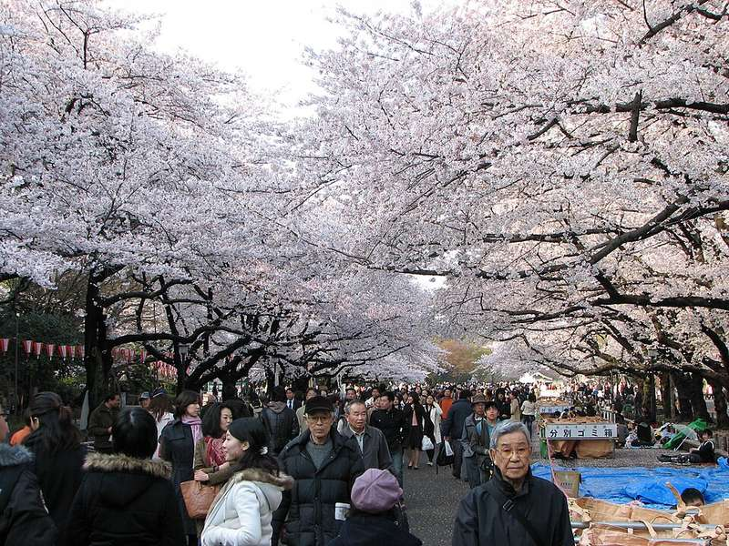
Großer Park mit Tokios Museums-Cluster. Plan für die Mittagshitze: Tokyo National Museum (Samurai-Schwerter, Kimonos — Japans bestes Museum) 2–3 h in der Klimaanlage. Am Südrand die Ameyoko-Marktgasse.
⏰ Nationalmuseum 9:30–17 Uhr, Mo zu (Mi passt) · ¥1.000 (~€6)
2🎮 AkihabaraElectric Town — Nachmittag im Neonlicht
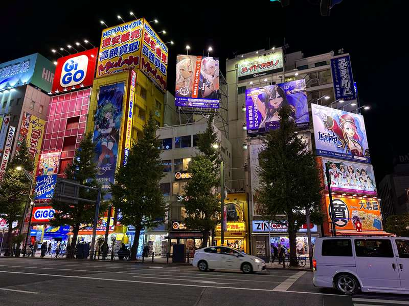
Anime, Manga, Retro-Games und Elektronik auf mehreren Etagen: Super Potato (Retro-Games), Yodobashi Akiba (alles mit Stecker), Gachapon-Hallen. ⚠ Nicht bis spätabends bleiben — spätestens ~17:45 los, danach geht's quer nach Shibuya zum Sky-Slot.
⏰ Läden meist 10–21 Uhr · 🚇 ab Ueno 2 Stationen · spätestens ~17:45 Richtung Shibuya los
3🌆 Shibuya Sky ⭐✅ Gebucht: 19:00 Uhr — Nacht-Skyline statt Sunset
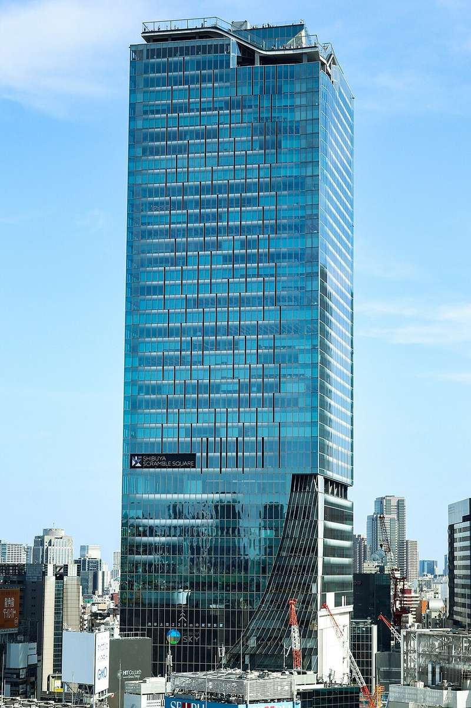
Offenes Deck über ganz Tokio — Glaskanten, Liegenetze, 360°-Blick. Der Slot für den 11.08. war schon weg, deshalb ist's jetzt auf 12.08./19:00 gebucht — kein Sunset mehr (der ist ~18:40 vorbei), dafür Skyline bei Nacht. ⚠ Kommt von Akihabara (Ost) — ~30 Min Bahn quer durch die Stadt einplanen.
✅ Ticket gebucht (Klook) · Einlass 19:00–19:19 · 🚇 ab Akihabara via Yamanote-Line ~30 Min
4🛍 ✅ Uniqlo Ginza — FlagshipWart ihr — der große Regentag-Einkauf 🛍
Belegt über den Kontoauszug: ¥41.355 (~€225), der mit Abstand größte Einzelposten der Reise. Zwölf Etagen an der Chuo-dori. Bestätigt, dass ihr den Waschtag wie geplant nach Ginza verlängert habt — Ginza stand als Regen-Backup im Plan.
✅ besucht am Mi 12.08. · ¥41.355 (~€225) · ⏰ 11–21 Uhr · 🚇 Ginza
🍽 Essen in der Gegend
5Hard Rock Cafe Ueno-Eki 🎸✅ Besucht — Bennis Fazit: „Einmal reicht, war viel zu teuer.“
Von den fünf Hard Rock Cafés in Japan ist das hier das, das euch am wenigsten Umweg kostet: Es sitzt im Bahnhofsgebäude Ueno (atré), also praktisch neben dem Museums-Nachmittag. Burger, Ribs, laute Musik, Gitarren an der Wand — und der Rock Shop mit den Städte-Shirts und Pins liegt gleich daneben. Öffnet schon um 8, taugt also auch fürs Frühstück oder als klimatisierte Pause.
⏰ Restaurant 8–23 Uhr (letzte Bestellung 22:00), Rock Shop 9–22 Uhr · täglich
6✅ The Music Bar Cave ShibuyaWart ihr — Musikbar zum Ausklang 🎵
Belegt über den Kontoauszug: ¥14.100 (~€77), einer der teuersten Abende. Liegt in Shibuya, passt also direkt an den Shibuya-Sky-Slot um 19:00 an.
✅ besucht am Mi 12.08. abends · ¥14.100 (~€77)
7✅ Kohikan Ginza Chuo-doriWart ihr — Kaffeepause auf der Ginza ☕
Belegt über den Kontoauszug: ¥3.490 (~€19). Kohikan ist eine klassische Kissaten-Kette mit Handfilter-Kaffee — die ruhige Variante zwischen zwei Kaufhäusern.
✅ besucht am Mi 12.08. · ¥3.490 (~€19)
Donnerstag, 13.08. T4 · „Hafen & Nudeln“ — Yokohama6 Spots · 2 🍽 · ⚠ Obon▸
Do 13.08. ✅ ERLEDIGT. Entschieden am 12.08. abends (Philip) — Yokohama statt Strandtag Kamakura, auf „Tipp von lokal“ (Benni). Ab Shinjuku-sanchome mit der Fukutoshin-Linie **umsteigefrei bis Minato Mirai**, ~45 Min, ~¥630 (~€3,50). ⚠ Regen ab 19 Uhr (3–5 mm/h) → vorher zurück oder drinnen sein.
🚶 Fußweg 1 von 2 · rund um Cup Noodles Museum Nr. 1, 2, 3, 4, 5, 6, 7
🗺 Fußweg 1 in Google Maps — Route & Zoom🚶 Fußweg 2 von 2 · rund um Itamae Sushi Shinjuku — Toho-Gebäude Nr. 8
🗺 Itamae Sushi Shinjuku — Toho-Gebäude in Google MapsDer Tag zerfällt in 2 Fußwege — zwischen den Blöcken fahrt ihr (Bahn/Bus/Taxi). Jeder Block hat seine eigene Karte und seinen eigenen Maps-Link, damit nichts rausgelöscht werden muss.
1🍜 Cup Noodles Museum ⭐Eigenen Instant-Becher zusammenstellen 🍜
Museum zur Erfindung der Instant-Nudel — Herzstück ist die „My CUPNOODLES Factory“: Becher selbst bemalen, Brühe und vier Toppings aussuchen, einschweißen lassen, mitnehmen. Dazu eine Halle mit den Verpackungen aus 60 Jahren.
⏰ 10:00–18:00, letzter Einlass 17:00 · ⚠ Ruhetag Dienstag · ¥500 (~€2,80) Eintritt, Becher extra · ⚠ Nummernticket vor Ort, kann ausgehen → früh hin
2🧱 Aka-Renga (Rote Backsteinlager)Zollspeicher von 1911, heute Läden & Food
Zwei denkmalgeschützte Backsteinhallen direkt am Hafenbecken, innen Läden, Cafés und Essensstände, davor eine Promenade mit Blick auf die Bucht. Klassischer Lunch-Stopp zwischen Museum und Gondel.
⏰ Halle 1 10:00–19:00, Halle 2 11:00–20:00 · Gelände gratis
3🚡 Yokohama Air CabinStadt-Gondel über dem Hafen 🚡
Seilbahn zwischen Bahnhof Sakuragicho und Aka-Renga, 5 Minuten über dem Wasser und den Gleisen — abends beleuchtet. Kurz, touristisch, aber der beste Überblick über Minato Mirai ohne Aussichtsturm.
⏰ werktags 10:00–21:00 · ~¥1.000 einfach (~€5,50) / ¥1.800 hin+zurück (~€10)
4🇪🇺 BashamichiJapans erste Straße im westlichen Stil (1867) 🇪🇺
Gaslaternen, Backstein-Bankgebäude, breite Allee — hier landeten nach der Hafenöffnung die westlichen Kaufleute. 7 Min zu Fuß vom Air-Cabin-Ausstieg Sakuragicho. Kostet nichts, ist einfach eine Straße zum Durchlaufen, mit hoher Restaurantdichte.
⏰ immer · gratis · 7 Min ab Sakuragicho
5🏮 Chinatown (Chukagai)Größte Chinatown Japans
400+ Läden auf engem Raum, Nikuman (gefüllte Dampfbrötchen) an den Straßenständen, dazu der bunte Kanteibyo-Tempel. Gratis zum Durchlaufen — an Obon-Tagen allerdings sehr voll.
⏰ Läden ~10–21 Uhr · gratis · 🚇 Station Motomachi-Chukagai
6🏡 Motomachi & YamateDer europäische Hügel — 7 Westhäuser, gratis
Ab 1859 wohnten hier die Ausländer: sieben erhaltene westliche Villen im Zedernhang (u. a. die Ehrismann-Residenz, für einen Schweizer Seidenhändler gebaut, und Berrick Hall), dazu der Hafenblick-Park. Unten die Motomachi-Einkaufsstraße. ⚠ Braucht einen eigenen halben Tag — am 13.08. zeitlich nicht mehr drin gewesen.
⏰ Villen 9:30–17:00, letzter Einlass 16:30, Eintritt frei · Park immer offen · 🚇 Motomachi-Chukagai, Ausgang 5
🍽 Essen in der Gegend
7NogechoRetro-Kneipengasse gegenüber dem Bahnhof 🏮
Ein paar hundert winzige Izakayas in engen Gassen, direkt gegenüber vom Bahnhof Sakuragicho. Viele öffnen schon 15–17 Uhr. Nicht westlich, nicht hübsch — das ehrlichste Yokohama.
⏰ viele Läden ab 15–17 Uhr · ~¥2.000–3.000 p. P. (~€11–17) · ⚠ oft nur Bargeld
8✅ Itamae Sushi Shinjuku — Toho-GebäudeWart ihr — Sushi-Abend zurück in Shinjuku 🍣
Belegt über den Kontoauszug: ¥14.658 (~€80). Liegt im Toho-Gebäude in Kabukicho, also unter dem Godzilla-Kopf und zwei Minuten vom Hotel. Der Abschluss des Yokohama-Tages, nachdem ihr zurück in Shinjuku wart.
✅ besucht am Do 13.08. abends · ¥14.658 (~€80) · Kabukicho, Toho-Gebäude
Freitag, 14.08. T5 · „Markt, Kunst & Bucht“ — Tsukiji → Ginza → teamLab → Odaiba5 Spots · ⚠ Obon▸
Fr 14.08. ✅ ERLEDIGT. Geografisch eine Linie von Nord nach Süd. ⚠ Obon-Woche. teamLab war der Wetter-Hedge: Gewitter 13–18 Uhr, der 15:00-Slot deckte genau die schlimmste Phase ab. ⚠ Kaiserpalast-Ostgarten hat freitags Ruhetag — nur die Outer Gardens/Nijubashi wären gegangen.
🚶 Fußweg 1 von 3 · rund um Tsukiji Outer Market Nr. 1, 2, 3
🗺 Fußweg 1 in Google Maps — Route & Zoom🚶 Fußweg 2 von 3 · rund um teamLab Planets Nr. 4
🗺 teamLab Planets in Google Maps🚶 Fußweg 3 von 3 · rund um Odaiba Nr. 5
🗺 Odaiba in Google MapsDer Tag zerfällt in 3 Fußwege — zwischen den Blöcken fahrt ihr (Bahn/Bus/Taxi). Jeder Block hat seine eigene Karte und seinen eigenen Maps-Link, damit nichts rausgelöscht werden muss.
1🛒 Tsukiji Outer MarketSeafood-Frühstück im Marktgewusel
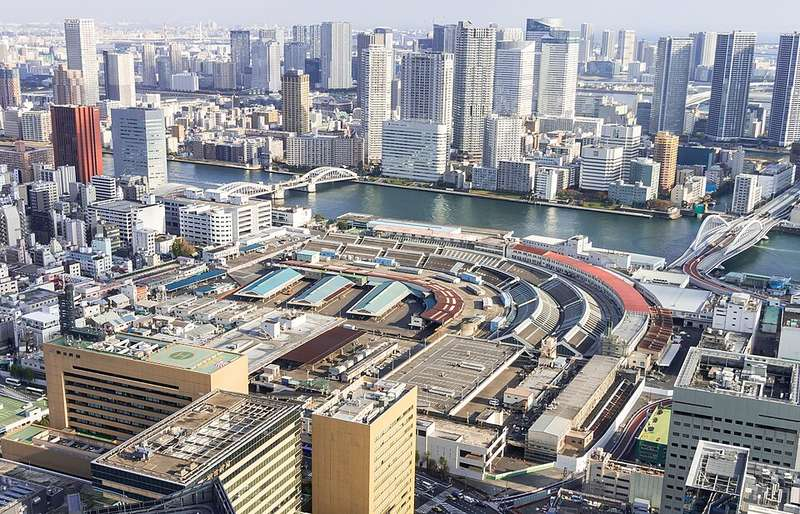
Der berühmte Fischmarkt-Kern ist umgezogen, aber der Außenmarkt lebt: Tamagoyaki-Spieße, frischer Thunfisch, Uni-Bowls, Messerläden. Früh kommen — die besten Stände sind ab mittags leergegessen.
⏰ ~5–14 Uhr, Kern 8–12 · Budget ~¥2.000–3.000 (~€12–18) fürs Durchfuttern
2🌳 Hamarikyu GardensEdo-Garten an der Bucht mit Teehaus
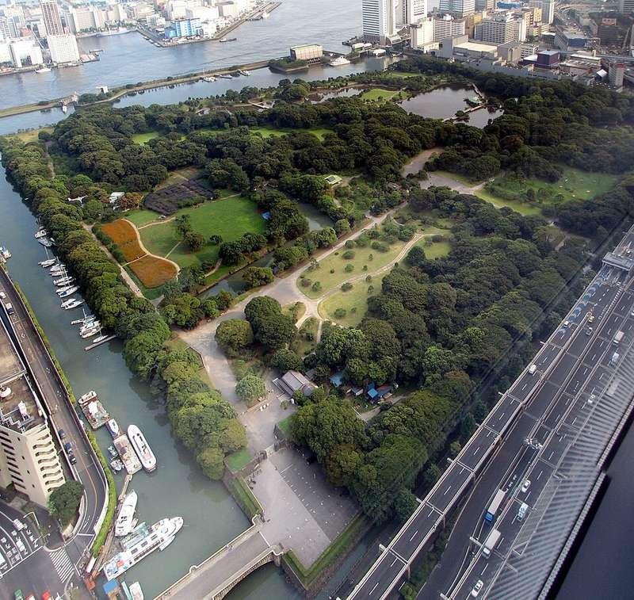
Ehemaliger Shogun-Garten zwischen Hochhäusern und Wasser — im Gezeiten-Teich steht ein Teehaus, in dem ihr Matcha mit Süßigkeit bekommt (¥850, ~€5). Entspannter 45-Minuten-Stopp nach dem Markt.
⏰ 9–17 Uhr · ¥300 (~€2)
3🛍 Ginza & Kabuki-zaEdel-Flaniermeile + Kabuki-Theater
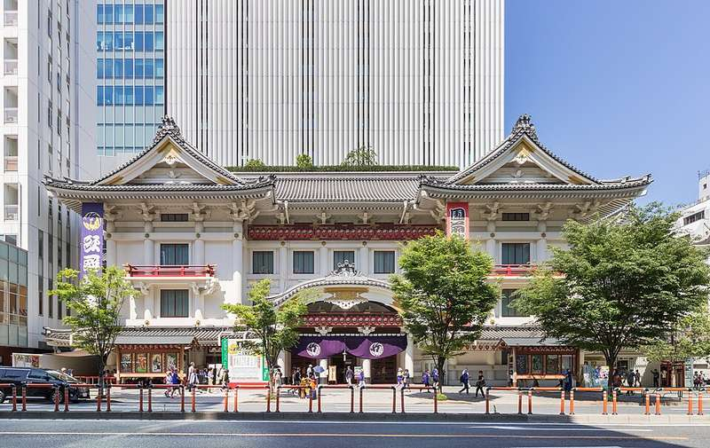
Tokios teuerste Einkaufsstraße — Flagship-Stores, Depachika-Food-Etagen (Mitsukoshi-Keller!), Uniqlo auf 12 Etagen. Am Kabuki-za-Theater gibt's spontane Einzel-Akt-Tickets, falls ihr 1 h klassisches Kabuki reinschnuppern wollt.
⏰ Läden ~11–20 Uhr · Kabuki-Einzelakt ~¥1.000–2.000 (~€6–12), an der Tageskasse
4🎨 teamLab Planets ⭐Barfuß durch digitale Kunstwelten
Ihr watet durch knietiefes Wasser mit digitalen Koi, versinkt in Spiegel- und Blumenräumen — immersiver als jedes Museum. Hose hochkrempelbar anziehen 😄. Dauer ~2 h, danach seid ihr schon fast in Odaiba.
✅ GEBUCHT & EINGELÖST: Einlass 15:00–15:30, ¥10.000 (~€54) für 2 Pers. über DMM · beide QR-Codes am 14.08. abgerufen · 👕 kurze/hochkrempelbare Hose, barfuß, Schließfächer da · ⚠ Anfahrt mit der Bahn, die Busse ab Ginza/Tsukiji sind überfüllt
5🌉 OdaibaGundam-Statue + Rainbow-Bridge-Sunset
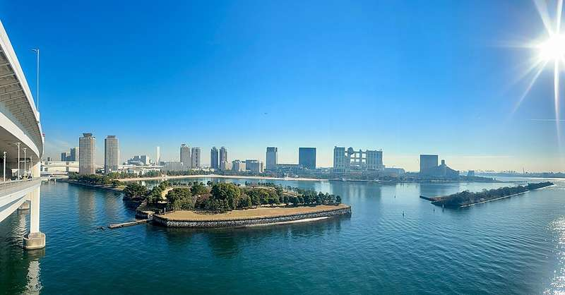
Künstliche Insel in der Bucht: die 20-m-Unicorn-Gundam-Statue vor DiverCity (verwandelt sich mehrmals täglich), Strandpromenade mit Blick auf Rainbow Bridge und Skyline — einer der besten Sunset-Spots der Stadt.
⏰ Gundam-'Transformation' u.a. ~17/19:30 Uhr · gratis · Sunset ~18:40
Samstag, 15.08. T6 · „Shogun-Grab im Zedernwald“ — Tagestrip Nikko6 Spots · ⚠ Obon▸
Sa 15.08. ✅ ERLEDIGT. Der Joker wurde am 14.08. früh zu Nikko (Philip). Damit fiel der Kaiserpalast-Ostgarten endgültig aus dem Plan. 🚆 Hin: „Kegon 061“, **Kita-Senju ab 08:22** → Tobu-Nikko 10:16 · Zurück: „Kegon 064“ ab 15:53 → Kita-Senju 17:31. Je ¥3.700 für 2 Pers. ⚠ Das ist NUR der Schnellzug-Zuschlag — der Fahrpreis (~¥1.400 p. P., ~€7,70) läuft zusätzlich über die IC-Karte. Abends packen — Shinkansen So 09:12!
🚶 Fußweg 1 von 2 · rund um Toshogu Nr. 1, 2, 3, 4, 5
🗺 Fußweg 1 in Google Maps — Route & Zoom🚶 Fußweg 2 von 2 · rund um Kanmangafuchi-Schlucht Nr. 6
🗺 Kanmangafuchi-Schlucht in Google MapsDer Tag zerfällt in 2 Fußwege — zwischen den Blöcken fahrt ihr (Bahn/Bus/Taxi). Jeder Block hat seine eigene Karte und seinen eigenen Maps-Link, damit nichts rausgelöscht werden muss.
1⛩ Toshogu ⭐Grabmal des ersten Shogun — und der Publikumsmagnet
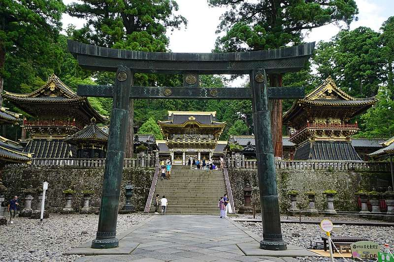
Mausoleum von Tokugawa Ieyasu, dem Begründer des Shogunats. Allein am Yomeimon-Tor stecken über 500 geschnitzte Figuren; dazu die Schlafende Katze, die Drachenhalle und der Treppenaufstieg zum eigentlichen Grab (~20 Min extra). ⚠ Rückmeldung Philip 15.08.: „Sehr touristisch“ — hier laufen alle hin.
⏰ 9:00–17:00, letzter Einlass 16:30 · ¥1.600 (~€8,80), mit Schatzmuseum ¥2.400 · ⚠ Bargeld · ~90 Min
2🏛 TaiyuinDas ruhigere, schönere Mausoleum
Grab von Iemitsu, Ieyasus Enkel. Aus Respekt vor dem Großvater bewusst zurückhaltender gebaut — Gold auf Schwarz statt Farbexplosion, dafür im Zedernwald und mit einem Bruchteil der Leute. Für viele der schönere Bau von beiden. 3 Min neben Futarasan.
⏰ 9:00–17:00 · ¥1.000 (~€5,50), Kombi mit Toshogu ¥2.100 · ⚠ Bargeld · ~40 Min
3🛕 Rinno-ji SanbutsudoGrößte Holzhalle Nikkos, drei vergoldete Buddhas
In der Haupthalle stehen drei goldene Buddha-Figuren von je 8 m Höhe. ⚠ Preis-Korrektur: viele Seiten führen noch ¥400 — laut Betreiber (rinnoji.or.jp) sind es aktuell **¥1.000 für Erwachsene**, ¥500 für Schulkinder.
⏰ 9:00–17:00 (Apr–Okt) · ¥1.000 (~€5,50) · ⚠ Bargeld · ~35 Min
4⛩ Futarasan-SchreinDer älteste von allen (782), den Bergsgöttern gewidmet
Deutlich älter als alles Tokugawa-Prunkvolle drumherum: gegründet 782, gewidmet den drei heiligen Bergen Nikkos. Viel Moos, alte Zedern, wenig Betrieb. Hauptgelände kostet nichts, nur ein kleiner Gartenbereich hat Eintritt.
⏰ 8:00–17:00 · Hauptgelände gratis · ~25 Min, im Vorbeigehen auch in 10 machbar
5🌉 Shinkyo-BrückeDie rote heilige Brücke am Ortseingang
Leuchtend rote Bogenbrücke über den Daiya, seit Jahrhunderten der zeremonielle Zugang zum Schreinbezirk. Angucken und fotografieren kostet nichts; nur wer wirklich drübergehen will, zahlt.
⏰ immer sichtbar · Ansehen gratis · Bus ab Bahnhof ¥220 (~€1,20), 5 Min · ~10 Min
6💎 Kanmangafuchi-Schlucht❌ Nicht geschafft — die Jizo-Reihe am Fluss
Der Daiya hat sich hier durch altes Lavagestein gefressen; am Ufer sitzt eine Reihe von ~70 steinernen Jizo-Figuren in roten Mützchen. Im Volksmund „Bake-Jizo“, weil man hin und zurück nie auf dieselbe Anzahl kommt. Gratis, fast keine Touristen — war als Geheimtipp gesetzt, fiel am 15.08. dem Zeitfenster bis 15:45 zum Opfer. Sie saßen am selben Fluss, nur weiter unten, bei Bier und Sandwich.
⏰ immer offen · gratis · 25 Min zu Fuß westlich vom Schreinbezirk · ~30 Min
„Viertel-Menü“ — weiter draußen, lohnt die Fahrt8 Spots▸
Frei einplanbar — Nachbarschaften abseits eurer Tagesrouten. Jede mit Hinweis, an welchen Tag sie sich dranhängen lässt. 🚇 schlägt in Tokio fast immer das 🚕 Taxi (Beispiel Shinjuku→Shimokita: Bahn 10 Min/~€1,20 vs. Taxi 20 Min/~€18).
🚶 Fußweg 1 von 8 · rund um Shimokitazawa Nr. 1
🗺 Shimokitazawa in Google Maps🚶 Fußweg 2 von 8 · rund um Kichijoji & Inokashira-Park Nr. 2
🗺 Kichijoji & Inokashira-Park in Google Maps🚶 Fußweg 3 von 8 · rund um Nakameguro & Daikanyama Nr. 3
🗺 Nakameguro & Daikanyama in Google Maps🚶 Fußweg 4 von 8 · rund um Yanaka & Yanaka Ginza Nr. 4
🗺 Yanaka & Yanaka Ginza in Google Maps🚶 Fußweg 5 von 8 · rund um Kagurazaka Nr. 5
🗺 Kagurazaka in Google Maps🚶 Fußweg 6 von 8 · rund um Nakano Broadway Nr. 6
🗺 Nakano Broadway in Google Maps🚶 Fußweg 7 von 8 · rund um Sunshine City, Ikebukuro Nr. 7
🗺 Sunshine City, Ikebukuro in Google Maps🚶 Fußweg 8 von 8 · rund um Thermae-yu, Kabukicho Nr. 8
🗺 Thermae-yu, Kabukicho in Google MapsDer Tag zerfällt in 8 Fußwege — zwischen den Blöcken fahrt ihr (Bahn/Bus/Taxi). Jeder Block hat seine eigene Karte und seinen eigenen Maps-Link, damit nichts rausgelöscht werden muss.
1🏘 ShimokitazawaVintage, Indie & Izakaya-Gassen
Tokios Szeneviertel für Secondhand-Mode, Platten-Läden, kleine Theater und Bars — verwinkelte autofreie Gassen, null Hochhaus. Nachmittags stöbern, abends in einer der winzigen Kneipen hängenbleiben. Euer Tempo in Viertelform.
🚇 Odakyu ab Shinjuku ~10 Min (~¥180/€1,20) · passt an: T1-Nachmittag (statt/nach Koenji) oder T6
2🌳 Kichijoji & Inokashira-ParkLieblingsviertel der Tokioter + Park mit See
Wird in Umfragen regelmäßig zum beliebtesten Wohnviertel gewählt: Inokashira-Park mit Schwanen-Tretbooten, drumherum Cafés, und abends die Harmonica Yokocho — ein Mini-Gassenlabyrinth voller Yakitori-Buden. Ghibli-Museum liegt am Parkrand.
🚇 JR Chuo ab Shinjuku ~15 Min (~¥230/€1,50) · passt an: T6 oder als lockerer Halbtag
3🏘 Nakameguro & DaikanyamaKanal-Flaniermeile & Design-Viertel
Der Meguro-Kanal mit Cafés und Boutiquen direkt am Wasser, daneben Daikanyama mit der berühmten T-Site-Buchhandlung — Tokios stylishste Ecke, entspannt statt hektisch. Perfekte Matcha-und-Bierchen-Gegend.
🚇 ab Shibuya nur 3 Min (~¥160/€1) · passt an: T2 nach Shibuya, vor dem Sky-Slot
4🏘 Yanaka & Yanaka GinzaAlt-Tokio: Shitamachi-Gassen & Tempel
Das Viertel, das Krieg und Beben überlebt hat: alte Holzhäuser, 60+ kleine Tempel, die Yanaka-Ginza-Einkaufsgasse mit Streetfood und Katzen als Maskottchen. Wie Tokio vor 70 Jahren — komplettes Kontrastprogramm zu Shinjuku.
🚇 JR bis Nippori ~25 Min (~¥210/€1,30) · passt an: T3-Vormittag (liegt direkt bei Ueno)
5🏘 KagurazakaEhem. Geisha-Viertel — Kopfstein & Bistros
Kopfsteingepflasterte Hänge, versteckte Restaurants in alten Geisha-Häusern, dazu ein französischer Einschlag (Bistros, Patisserien). DER Kandidat für euer Prag-Konzept: Flanierroute durch die Gassen, die beim Abendessen endet.
🚇 ab Shinjuku ~10 Min (~¥180/€1,20) · passt an: jeden freien Tokio-Abend
6🛍 Nakano BroadwayRetro-Anime- & Sammler-Kaufhaus
Vier Etagen Manga, Retro-Games, Sammelfiguren, Uhren, Kuriositäten — das „alte Akihabara“ für Kenner, roher und günstiger. Davor eine überdachte Shotengai-Arkade mit billigem Essen. Klimatisiert = gutes Hitze-Programm.
🚇 JR Chuo ab Shinjuku ~5 Min (~¥170/€1,10) · passt an: T1 (ein Stopp vor Koenji) oder Regen-Backup
7🐠 Sunshine City, Ikebukuro🌧 Schlechtwetter-Komplex: Aquarium, Planetarium, Pokémon Center
Ganzer Gebäudekomplex zum Drinbleiben: Aquarium auf dem Dach (mit Pinguinen, die scheinbar über der Skyline schwimmen), Planetarium, der Indoor-Freizeitpark Namja Town, ein großes Pokémon Center und Animate. **Ein unterirdischer Gang führt vom Bahnhof Ikebukuro direkt hin** — ihr werdet nicht nass.
⏰ Aquarium werktags 10–19 Uhr, letzter Einlass 30 Min vorher · ¥2.600–3.200 (~€14–18), dynamischer Preis · Ruhetag 2026: nur 12.11.
8♨ Thermae-yu, Kabukicho♨️ Echtes Onsen, 24 h offen, 5 Min vom Hotel
Kein Wellness-Fake, sondern echtes Thermalwasser mitten in Kabukicho — mehrere Becken, Sauna, Ruheräume. Rund um die Uhr geöffnet, der Preis schließt Kurtaxe, Hausanzug und Handtuchset ein. Das beste Regen- und Erschöpfungsprogramm, das ihr zu Fuß erreicht.
⏰ 24 h · Mo–Do ¥3.100 (~€17), Fr–So + Feiertag ¥3.200 (~€18) · ⚠ Tattoo-Regeln vorher klären
🎬 Kabukicho-Drehorte — optional, vor der Haustür8 Spots · optional▸
Alles 2–8 Min zu Fuß vom Hotel — Abendprogramm ohne eine einzige Bahnfahrt. Quelle: Tafel „超・ご当地応援“ in der Lobby des Super Hotel (Foto Benni, 13.08.2026). Golden Gai und Hanazono-Schrein stehen schon auf T1 und sind hier nur der Vollständigkeit halber genannt. Kabukicho arbeitet bewusst mit T-Kreuzungen → labyrinthartig; Verlaufen ist Teil des Programms.
🗺 Diese Gegend in Google Maps — Route & Zoom1🈁 Kabukicho Ichiban-gaiDas rote Neon-Tor am Eingang
Der berühmte rot leuchtende Torbogen, durch den man ins Viertel läuft — das Postkartenmotiv von Kabukicho schlechthin. Dahinter beginnt die Hauptgasse mit Wirtshäusern, Pachinko und Hostess-Bars. Drehort für den Film „Shinjuku Swan“.
⏰ immer · gratis · ~5 Min vom Hotel · abends am fotogensten
2🦖 Cine City Plaza & Godzilla-KopfDer Platz mit dem Godzilla über dem Dach
Fußgängerplatz mitten in Kabukicho, über dem aus dem 8. Stock des Toho-Kinos ein lebensgroßer Godzilla-Kopf ragt — zu jeder vollen Stunde brüllt und raucht er kurz. Der Platz selbst ist Bühne für Straßenmusik und Events. Drehort für den Realfilm „City Hunter“.
⏰ Platz immer offen · gratis · ~4 Min vom Hotel · Godzilla-Show stündlich bis ~20 Uhr
3⚾ Shinjuku Batting CenterBaseball-Schlagkäfige über mehrere Etagen
Mehrstöckige Schlagkäfige mitten im Viertel: Münze rein, Schläger nehmen, Bälle kommen mit wählbarem Tempo. Kein Vorwissen nötig, Kult bei Einheimischen nach Feierabend — und als Minispiel in der „Yakuza/Ryū ga Gotoku“-Reihe verewigt.
⏰ bis spät nachts · ~¥400 (~€2) pro Runde · nur Bargeld/Münzen · ~4 Min vom Hotel
4🍢 Omoide YokochoYakitori-Gasse im Rauch, „Piss Alley“
Enge Nachkriegsgasse westlich des Bahnhofs mit dicht gedrängten Yakitori- und Motsu-Buden, sechs Hocker pro Laden, Grillrauch bis in die Dachbalken. Touristisch, aber immer noch echt. Kam im Film „Gran Turismo“ vor.
⏰ die meisten Läden ab ~17 Uhr · ~¥2.000–3.000 p. P. (~€11–17) · viele nur Bargeld · ~10 Min zu Fuß
5🚇 Ō-Gādo Ost (Bahnunterführung)Die Unterführung aus „Your Name“
Die große Straßenunterführung unter den Gleisen östlich des Bahnhofs — im Anime „Your Name“ als Bild wiedererkennbar, sonst schlicht der Weg zwischen Bahnhof und Kabukicho. Ein Foto-Stopp im Vorbeigehen, kein eigenes Ziel.
⏰ immer · gratis · liegt auf dem Weg Bahnhof ↔ Hotel
6🌳 Ōkubo-ParkKleiner Nachbarschaftspark, direkt nebenan
Unscheinbarer Park am Nordrand von Kabukicho, praktisch neben eurem Hotel — tagsüber Spielplatz und Schattenbänke, Drehort der Serie „Shinjuku Yasen Byōin“. Als Ziel zu klein, als Abkürzung und Verschnaufpause brauchbar.
⏰ immer · gratis · ~2 Min vom Hotel · abends eher meiden
7🌸 Kabukicho Sakura-dōriLaternen-Allee quer durchs Viertel
Die von Kirschbäumen und Laternen gesäumte Querstraße durch Kabukicho — im Frühling Blüten, das restliche Jahr eine ruhigere Achse abseits der Hauptgasse. Kulisse für Aimyons Musikvideo „Sakura ga furu yoru wa“.
⏰ immer · gratis · ~5 Min vom Hotel
8🎳 Shinjuku Copa BowlBowlingbahn im Vergnügungsviertel
Klassische Bowlingbahn mitten in Kabukicho, im selben Komplex wie Karaoke und Spielhalle — das japanische Standard-Abendprogramm, wenn draußen Regen ist. Drehort der Serie „Ashita, watashi wa dareka no kanojo“.
⏰ bis spät · ~¥800 (~€4,50) pro Spiel + Schuhe · ~5 Min vom Hotel
„Food-Joker“ Tokio — frei einplanbar0 Spots · 6 🍽▸
Über die Stadt verteilt — Google-Maps-Link antippen für die exakte Position.
🍽 Essen in der Gegend
1Benitsuru (Asakusa)Dreilagige Bacon-Egg-Pancakes 🥞
Der Insta-berühmte Pancake-Turm mit Bacon und Ei — fluffig, dekadent, fotogen. Passt perfekt als Frühstück/Brunch vor Senso-ji (T3).
⚠ Reservierung nötig · Asakusa
2MarushichiDas dickste Katsudon Japans
Katsudon mit einem absurd dicken, saftigen Schnitzel — Kult-Laden, oft Schlange. Deftig: danach braucht ihr kein Abendessen mehr.
früh da sein oder Wartezeit einplanen
3Shunya-chanStreet-Style-Ramen mit klarer Brühe
Puristische Shoyu-Ramen im Streetfood-Stil — leichter als die fetten Tonkotsu-Bomben, genau richtig bei Sommerhitze.
4Bar CentifoliaGehobene Cocktailbar zum Abschluss
Japanische Bartender-Kunst: Eis von Hand geschnitzt, saisonale Zutaten, ruhige Atmosphäre — das Kontrastprogramm zu Golden Gai.
smart-casual reicht · Reservierung sinnvoll
5Ikura Shibuya — Teppan-OmuriceOmelett-Reis live am Counter 🍳
Teppan-Omurice mit Hamburg-Steak, direkt vor euch zubereitet — die Sauce wählt ihr (Demiglace, Chili, Mentaiko-Creme oder Black Curry), Käse-Topping wird empfohlen. Hamburg-Omurice ¥2.000 (~€11).
⏰ NUR 11–15 & 17–22 Uhr → als Lunch einbauen · MIEUX Bldg 1F, Maruyamacho, Shibuya
6Menya Musashi Bukotsu GaidenMichis Tipp: Ramen mit Show-Faktor 🍜
„Fast eine Sehenswürdigkeit“ (O-Ton Michi): die Küche brüllt jede Bestellung im Chor zurück. Bekannt für Tsukemen — dicke Nudeln zum Dippen in konzentrierter Brühe. An der Dogenzaka, 5 Min von der Shibuya-Crossing.
⏰ ~11–22 Uhr · ~¥1.000–1.500 (~€6–8) · ⚠ Ticket-Automat am Eingang, nur Bargeld
⏳ „Nicht geschafft“ — was diese Reise liegen blieb7 Spots · offen▸
Alles, was mal im Plan stand und am Ende keinen Tag bekommen hat. Kein Verlust — nur dokumentiert, damit es bei einer nächsten Japan-Runde nicht wieder von vorn recherchiert werden muss.
🚶 Fußweg 1 von 5 · rund um Kamakura — Daibutsu & Hase-dera Nr. 1, 2
🗺 Fußweg 1 in Google Maps — Route & Zoom🚶 Fußweg 2 von 5 · rund um Meiji-Schrein — Innengarten Nr. 3, 5
🗺 Fußweg 2 in Google Maps — Route & Zoom🚶 Fußweg 3 von 5 · rund um Shinjuku Gyoen Nr. 4
🗺 Shinjuku Gyoen in Google Maps🚶 Fußweg 4 von 5 · rund um Hakone Nr. 6
🗺 Hakone in Google Maps🚶 Fußweg 5 von 5 · rund um Tokyo DisneySea Nr. 7
🗺 Tokyo DisneySea in Google MapsDer Tag zerfällt in 5 Fußwege — zwischen den Blöcken fahrt ihr (Bahn/Bus/Taxi). Jeder Block hat seine eigene Karte und seinen eigenen Maps-Link, damit nichts rausgelöscht werden muss.
1🗿 Kamakura — Daibutsu & Hase-deraDer 11,3-m-Bronze-Buddha und der Terrassentempel
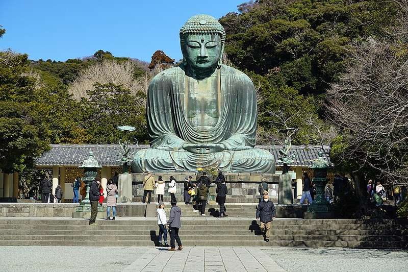
Stand ursprünglich als eigener Tag (T4) im Plan. Der Große Buddha sitzt seit 1252 unter freiem Himmel, seit ein Tsunami die Halle wegriss; für ¥50 extra kann man in die Statue reinklettern. 5 Min weiter der Hangtempel Hase-dera mit Blick über die Bucht. Fiel weg, als der 13.08. auf Yokohama gedreht wurde und der Ersatz-Strandtag am 15.08. zu Nikko wurde.
⏰ Daibutsu 8:00–17:30, ¥300 (~€2) · Hase-dera 8–17 Uhr, ¥400 (~€2,50) · Enoden-Station Hase
2🏖 Yuigahama BeachDer Strandtag, den es nie gab 🏖
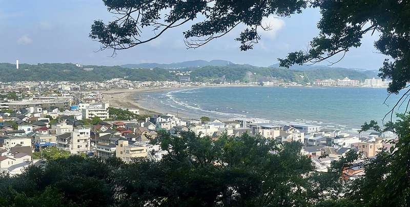
Breiter Sandstrand bei Kamakura, im August voll mit Umi-no-ie — temporären Strandhäusern mit Essen, Bier, Duschen und Schirmverleih. War zweimal eingeplant (13.08., dann 15.08.) und ist zweimal dem Wetter bzw. der Umplanung zum Opfer gefallen.
⏰ Strandsaison bis Ende August · Schirm/Liege ~¥1.500–3.000 (~€9–18)
3🌸 Meiji-Schrein — InnengartenWollten rein, hatten kein Bargeld
Der kostenpflichtige Innengarten des Meiji-Schreins (明治神宮御苑) mit Iris-Feld und Kiyomasa-Brunnen. Am 10.08. standen sie davor und kamen nicht rein, weil die Kasse nur Bargeld nimmt. Philip damals: „Wollen nochmal hin.“ Daraus wurde die Regel, bei jedem Eintritt dazuzuschreiben, wenn nur Bargeld geht.
⏰ März–Okt 9:00–16:30, letzter Einlass 16:00, täglich · ¥500 (~€2,80) · ⚠ NUR BARGELD
4🌳 Shinjuku GyoenDer große Landschaftsgarten vor der Haustür
Drei Gartenwelten in einer: japanischer Teichgarten, englische Wiesen, französische Alleen, dazu ein Gewächshaus. Lag zuerst auf T1, wanderte auf T2 — und verschwand, als der Dienstag komplett nach Ost-Tokio kippte.
⏰ 9:00–17:30 · ¥500 (~€2,80) · dienstags offen
5🛍 Harajuku — Takeshita & OmotesandoKawaii-Chaos + elegante Flaniermeile
Die Takeshita Street ist Japans Teenie-Moden-Wahnsinn auf 400 Metern, parallel dazu die baumbestandene Omotesando mit den Architektur-Flagshipstores. Zusammen 1–2 Stunden. Ging mit dem alten T2 verloren.
🚇 direkt am JR-Bahnhof Harajuku
6♨ HakoneOnsen, Seilbahn & Fuji-Blick
Klassiker-Rundtour: Bergbahn, Seilbahn über die Schwefelfelder von Owakudani, Piratenschiff über den Ashi-See, dazu Onsen. War Bennis Reel-Wunsch vom 25.07. als Joker-Option. ⚠ Realitäts-Check: der Fuji ist im August fast nie zu sehen und hat keine Schneekappe — das Reel-Bild ist von Ende April.
🚆 Odakyu-Express ab Shinjuku (✅ entschieden: KEIN Romancecar, spart ~¥1.200 Zuschlag) · Free Pass ¥7.100 (~€41) p. P., Stand seit 01.10.2025
7🎢 Tokyo DisneySeaDer Disney-Park, den es nur hier gibt
Weltweit einzigartiger Themenpark rund ums Meer, gilt als schönster Disney-Park überhaupt. ⚠ August-Wochenende = extrem voll, Tickets vorab datiert kaufen.
🎢 Tagesticket ~¥8.000–10.900 (~€49–66) · volle Tagesfüllung
🏯Osaka / Kansai16.–21.08. · 6 Tage/Gruppen · 48 Spots (davon 9 🍽)▸
Sonntag, 16.08. K0 · „Ankommen“ — Umeda & erste Neon-Runde4 Spots · 2 🍽▸
So 16.08. — Shinkansen-Ankunft 11:39, ab ~13 Uhr in der Stadt (~8 h). Alles hotelnah (Umeda/Nakanoshima), abends erste Dotonbori-Runde (Spots s. K1) — was heute nicht dran ist, wandert einfach in die K-Tage.
🚶 Fußweg 1 von 2 · rund um Umeda-Bummel Richtung Fluss Nr. 1, 5, 6
🗺 Umeda-Bummel Richtung Fluss in Google Maps🚶 Fußweg 2 von 2 · rund um Dotonbori (erste Runde) Nr. 2, 3, 4
🗺 Fußweg 2 in Google Maps — Route & ZoomDer Tag zerfällt in 2 Fußwege — zwischen den Blöcken fahrt ihr (Bahn/Bus/Taxi). Jeder Block hat seine eigene Karte und seinen eigenen Maps-Link, damit nichts rausgelöscht werden muss.
1✅ Umeda-Bummel Richtung FlussWart ihr — ziellos durch die Parallelstraßen
Vom Hotel zu Fuß nach Norden Richtung Fluss und quer durch die Seitenstraßen — bewusst ohne Programm, einfach schauen. Genau die Art Nachmittag, für die auf so einer Reise sonst nie Zeit ist.
✅ am So 16.08. · zu Fuß ab Hotel
2✅ Dotonbori (erste Runde)Wart ihr — der Neon-Kanal am Ankunftstag
Am Nachmittag/Abend des Ankunftstags schon einmal durch Dotonbori — Glico-Man, Riesenkrabbe, Budengassen. Der ausführliche Dotonbori-Abend steht weiterhin auf K1.
✅ am So 16.08.
3✅ Matcha-Teezeremonie am Dotonbori-KanalWart ihr — Teezeremonie mit Matcha 🍵
Teezeremonie direkt am Dotonbori-Kanal, wenige Minuten von Namba/Shinsaibashi. Damit ist der Teezeremonie-Wunsch der Reise abgehakt.
✅ am So 16.08. · ~¥4.000 p.P. · 45–60 Min
4🔪 ✅ Messerkauf — Sennichimae Doguyasuji🔪 Wart ihr — Auftrag von Bennis Kumpel erledigt
Osakas Küchengeräte-Straße südlich von Dotonbori, auf der mehrere Sakai-Messerhäuser sitzen. Hier wurde das Messer für Bennis Kumpel gekauft — der Extra-Trip nach Sakai ist damit hinfällig. (Genauer Laden trägt Philip nach.)
✅ am So 16.08. · Budget-Vorgabe war ¥27.000–30.000 · ⚠ Messer beim Heimflug in den Koffer, nicht ins Handgepäck
🍽 Essen in der Gegend
5✅ Sushi Sensu — Kitashinchi (Omakase)Wart ihr — Omakase auf Empfehlung der Rezeption 🍣
Sushi Sensu, Haupthaus im Untergeschoss an der Sonezaki-Shinchi 1-5-32 — mitten in Kitashinchi, Osakas gehobenem Ausgehviertel, keine 10 Gehminuten vom Hotel. Philips Urteil: „unfassbar lecker“. Damit ist der Reise-Wunsch „1× richtig gutes Sushi“ eingelöst, der ursprünglich als Lunch-Omakase in Tokio geplant war.
✅ am So 16.08. · ~€200 für zwei · B1, Sonezaki-Shinchi 1-5-32, Kita-ku · Empfehlung der Hotel-Rezeption
6✅ Hanshin Daishokudo (阪神大食堂), 9FWart ihr — Food-Hall im obersten Stock des Hanshin-Kaufhauses 🍜
Die „neue Art Food Court“ im 9. Stock des Hanshin Umeda Main Store — im Südturm der Osaka Umeda Twin Towers, direkt südlich des Bahnhofs. Acht bis zehn bekannte Osaka-Läden um eine gemeinsame Sitzlandschaft: Rindfleisch-Don (Kitashinchi Harami), Kushikatsu, Spice Curry, Vietnamesisch, Okonomiyaki (Chibo), Chinesisch, Pasta-Grill. Auf Google Maps taucht die Halle kaum auf, weil nur die einzelnen Stände gelistet sind. Tische im „Premium Room“ lassen sich vorab kostenlos reservieren (11–20 Uhr, 105 Min, max. 5 Personen).
✅ besucht am So 16.08. · 9F Hanshin Umeda Main Store · Kaufhaus ab 10 Uhr, Food-Hall-Stände bis ~22 Uhr · 10 Min zu Fuß vom Hotel
Montag, 17.08. K1 · „Neon-Nächte“ — Osaka Stadt9 Spots · 3 🍽▸
Mo 17.08. — der volle Osaka-Tag (Ankunftstag 16.08. ist jetzt K0). ✅ USJ ist am 25.07.2026 endgültig gestrichen (Philip + Benni: „das ist es nicht“) — der Tag gehört komplett der Stadt. ⚠ Tennoji Zoo hat montags Ruhetag.
🚶 Fußweg 1 von 5 · rund um Dotonbori Nr. 1, 2, 4, 5, 9, 10, 12
🗺 Fußweg 1 in Google Maps — Route & Zoom🚶 Fußweg 2 von 5 · rund um Osaka Castle Nr. 3
🚶 Fußweg 3 von 5 · rund um Osaka Aquarium Kaiyukan Nr. 6, 7
🗺 Fußweg 3 in Google Maps — Route & Zoom🚶 Fußweg 4 von 5 · rund um Shubodai (Ikeda) Nr. 8
🚶 Fußweg 5 von 5 · rund um Tokito (Karahori) Nr. 11
Der Tag zerfällt in 5 Fußwege — zwischen den Blöcken fahrt ihr (Bahn/Bus/Taxi). Jeder Block hat seine eigene Karte und seinen eigenen Maps-Link, damit nichts rausgelöscht werden muss.
1🌃 DotonboriNeon-Kanal & Streetfood — DER Osaka-Abend
Osakas Wahrzeichen-Viertel: Glico-Man-Leuchtreklame, Riesenkrabben an den Fassaden, Takoyaki- und Kushikatsu-Buden dicht an dicht. Abends hin, essen, staunen, treiben lassen.
⏰ abends am besten · Takoyaki ~¥600 (~€4) · zweite, ausführliche Runde (erste war am 16.08.)
2🛒 Kuromon Ichiba MarktÜberdachter Markt — Seafood direkt am Stand
„Osakas Küche“: 150 Stände mit Grill-Scallops, Wagyu-Spießen, frischem Thunfisch — vieles direkt zum Sofortessen. Vormittags kommen, mittags sind die besten Sachen weg.
⏰ ~9–16 Uhr (Stände unterschiedlich) · 5 Min von Dotonbori
3🏯 Osaka CastleDie Burg im Park
Osakas Postkarten-Burg auf mächtigen Steinmauern mit Wassergraben. Innen Museum mit Aufzug (klimatisiert!), oben Aussichtsplattform — oder einfach nur außen für die Fotos, das reicht vielen.
⏰ 9–17 Uhr · innen ¥600 (~€4), Park gratis
4🗼 Shinsekai & TsutenkakuRetro-Viertel mit Turm — nachts hoch!
Osakas nostalgische Ecke im 50er-Jahre-Look: Riesenreklamen, Kushikatsu-Läden (Regel: nie doppelt in die Sauce dippen!), der Tsutenkaku-Turm drüber. Michis Ritual: abends auf den Turm — „in der Nacht richtig geil“.
⏰ abends · Kushikatsu-Dinner ~¥2.000 (~€12) · Tsutenkaku ¥1.200 (~€7,50)
5⛩ Namba Yasaka SchreinDer Löwenkopf-Schrein
Kleiner Schrein mit einer 12 m hohen Bühne in Form eines aufgerissenen Löwenmauls — eines der skurrilsten Fotomotive Japans. 10 Minuten, aber die lohnen sich.
⏰ 6:30–17 Uhr · gratis · 10 Min von Namba
6🐋 Osaka Aquarium KaiyukanWalhai-Aquarium — der Hitze-/Regen-Joker
Eines der größten Aquarien der Welt: Walhai im zentralen Riesentank, Spiralweg von oben nach unten durch die Pazifik-Zonen. Bester Indoor-Backup, falls ein Nachmittag ins Wasser fällt.
⏰ 10–20 Uhr · ¥2.700 (~€16,50)
7🎢 USJ / Super Nintendo World❌ GESTRICHEN (Philip + Benni, 25.07.2026): „das ist es nicht“
Universal Studios mit Super Nintendo World. Stand lange als offener Entscheid im Plan und hätte einen kompletten Osaka-Tag gefressen — im August dazu Ferien und ohne Express Pass viel Schlange. Bewusst abgewählt zugunsten der Stadt und der Tagestrips. Steht nur noch hier, damit die Entscheidung nachvollziehbar bleibt; nichts zu buchen.
❌ nicht gebucht, nicht geplant · K1/K3/K4 bleiben unverändert
8🌆 Shubodai (Ikeda)Nightview-Torii am Stadtrand
Torii-Tor vor nächtlicher Skyline am Mt. Satsukiyama — ausgezeichnet als „Japan Night View Heritage“. Liegt deutlich außerhalb im Norden → nur machbar, wenn ihr abends per Taxi mobil seid.
🚕 per Taxi bis fast oben · eher Bonus als Pflicht
9🛍 Shinsaibashi-suji & AmerikamuraÜberdachte Shopping-Meile + Streetwear-Viertel
600 m überdachte Einkaufsarkade, die direkt auf Dotonbori zuläuft — plus nebenan Amerikamura, Osakas Streetwear-/Jugendviertel. ⬅ Verschoben von K0 (16.08. nicht mehr geschafft); passt hier ideal, weil ihr eh in Namba/Dotonbori seid: durch die Arkade schlendern und am Kanal rauskommen.
⏰ Läden bis ~21 Uhr · direkt nördlich von Dotonbori · ⬅ von K0 verschoben
🍽 Essen in der Gegend
10CAFE ANNON (Namba)Fluffy Pancakes, auch mit Matcha 🥞
Soufflé-Pancakes in zwei Varianten: „Wa“ (japanisch, Matcha) und „Yo“ (westlich), je ¥2.200 (~€13,50). Süßer Zwischenstopp im Namba-Gewusel.
⚠ nur Privaträume reservierbar — sonst anstehen
11Tokito (Karahori)Wagyu-Sandwich zum Lunch 🥪
Wagyu-Sando und Ei-Sando vom Team des Kult-Ladens „myneighbor“ — kleiner Laden im charmanten Karahori-Viertel.
⏰ NUR 11–15 Uhr · 5 Min von Station Tanimachi-rokuchome
12Jōtō Curry (Namba)Michis Tipp: Osakas Katsu-Curry-Klassiker 🍛
Katsu-Curry, wie es sein soll — schnell, günstig, ehrlich. Perfekter Lunch- oder Vor-dem-Abendprogramm-Stopp, wenn ihr eh in Namba/Dotonbori unterwegs seid.
⏰ mittags + abends · ~¥900–1.300 (~€5,50–8) · Nanbanaka, Naniwa-ku
Dienstag, 18.08. K2 · „Höhepunkte Ost“ — Kyoto (fix)8 Spots · 2 🍽▸
Di 18.08. ✅ GELAUFEN. Ost-Route Inari→Kiyomizu→Kōdai-ji→Gion sitzt. Der komplette Westen (Kinkaku-ji, Ryoan-ji) und Tō-ji wurden am 18.08. gestrichen — „schauen realistisch alle gleich aus“. Abends: Kōdai-ji-Illumination ab 19 Uhr.
🚶 Fußweg 1 von 2 · rund um Fushimi Inari-Taisha Nr. 1
🚶 Fußweg 2 von 2 · rund um Kiyomizu-dera Nr. 2, 3, 4, 5, 6, 7, 8, 9, 10
🗺 Fußweg 2 in Google Maps — Route & ZoomDer Tag zerfällt in 2 Fußwege — zwischen den Blöcken fahrt ihr (Bahn/Bus/Taxi). Jeder Block hat seine eigene Karte und seinen eigenen Maps-Link, damit nichts rausgelöscht werden muss.
1⛩ ✅ Fushimi Inari-Taisha10.000 rote Torii den Berg hinauf
Der Schrein mit den endlosen Tor-Tunneln. Um 7–8 Uhr seid ihr vor den Massen UND der Hitze da. Bis zur Yotsutsuji-Aussichtsplattform (~45 Min) reicht völlig — der Gipfel bringt kaum mehr.
✅ besucht Di 18.08. morgens · gratis
2🛕 ✅ Kiyomizu-deraHolzterrasse über dem Tal
Der berühmte Tempel auf 13 m hohen Holzstelzen mit Blick über Kyoto. Anstieg durch die historischen Gassen Sannenzaka & Ninenzaka — Souvenirs, Matcha-Eis, Foto-Ecken.
✅ besucht Di 18.08. · ¥500 (~€3)
3🎋 ✅ Kōdai-ji & BambushainDer Bambus-Tipp — abends beleuchtet · Illumination Di 18.08. ab 19 Uhr fix
Nene, die Witwe von Toyotomi Hideyoshi, ließ den Tempel 1606 für ihn bauen. Hinter dem Garten steigt ein eigener kleiner Bambushain den Hang hinauf, dazu der Kangetsudai — ein Pavillon, von dem aus früher der Mond über dem Teich betrachtet wurde. Ersetzt den Bambushain in Arashiyama: kleiner, viel leerer, und er liegt direkt auf eurem Weg von Kiyomizu-dera runter nach Gion.
⏰ tags 9–17 Uhr, ~¥600 (~€4) · 🌙 abends „Higashiyama Kangetsuro“ bis 23.08.: beleuchteter Bambushain, ~1.000 Bambuslaternen am Aufgang, Essensstände — 18–22 Uhr, letzter Einlass 21:15, ¥1.500 (~€9), ⚠ anderer Eingang unten am Daidokoro-zaka · ⚠ NUR BARGELD · Ruhetag Illumination 22.08. · ⏱ Sonnenuntergang 18.08. um 18:42, richtig dunkel ab ~19:10 — vor 19 Uhr hingehen lohnt nicht.
4👘 ✅ GionGeisha-Viertel — Hanamikoji & Shirakawa
Historisches Vergnügungsviertel: Teehäuser, Holzfassaden, mit Glück eine Geiko/Maiko auf dem Weg zum Termin (17–18 Uhr am wahrscheinlichsten). ⚠ Private Seitengassen sind fotografier-/betretungsverboten — auf den Hauptstraßen bleiben.
✅ besucht Di 18.08. · gratis · Geiko-Fenster 17–18 Uhr an der Tatsumi-Brücke
5🐉 Kennin-ji — Doppeldrache🐉 Zwei Drachen über 108 Tatami, Kyotos ältester Zen-Tempel
Ersatz für das geschlossene Seirai-in und ehrlich gesagt die größere Nummer: An der Decke der Dharma-Halle winden sich zwei Drachen von Koizumi Junsaku über 108 Tatami — man legt den Kopf in den Nacken und schaut hoch. Dazu im Hauptgebäude der berühmte Wind- und Donnergott-Wandschirm sowie ein Trockengarten. Kennin-ji ist von 1202, der älteste Zen-Tempel Kyotos, und liegt am Südende der Hanamikoji direkt hinter Gion. Innen und kühl — das richtige Ziel für die heißen Nachmittagsstunden.
⏰ 10–17 Uhr, letzter Einlass 16:30 · ¥800 (~€5) · Südende Hanamikoji
6🧶 Yasaka Kōshin-dō🧶 Tausend bunte Stoffbällchen an einem Miniaturtempel
Winziger Tempel drei Gehminuten unterhalb von Kōdai-ji, über und über behängt mit „Kukurizaru“ — bunten Stoffbällchen, die für gefesselte Affen stehen. Man schreibt einen Wunsch drauf und muss dafür ein Laster aufgeben. Das farbigste Fotomotiv in ganz Higashiyama und in fünf Minuten erledigt.
⏰ ~9–17 Uhr · Gelände gratis, Bällchen ¥500 (~€3), ⚠ Bargeld
7⛩ Chion-in⛩ Das größte Holztor Japans, 24 m hoch
Haupttempel der Jōdo-Schule, gleich nördlich vom Yasaka-Schrein. Das Sanmon-Tor von 1621 ist mit 24 m das größte hölzerne Tempeltor des Landes — davor zu stehen ist der eigentliche Punkt. Das Gelände samt Tor und Freitreppe ist frei begehbar, Eintritt zahlt man nur für die Gärten.
⏰ Gelände 9–16:30 Uhr · Tor und Gelände gratis · Gärten ¥300–500
8🛍 Kiddy Land & Loft — Smiski🛍 Blindbox-Auftrag für Philips Mitbewohner
Smiski sind japanisch (Dreams Inc., Tokio) — in Korea gibt es sie nicht regulär, sie müssen also in Japan gekauft werden. Es sind Blindboxen: die Serie sucht man aus, die Figur nicht. Kiddy Land liegt an der Ecke Sanjo/Kawaramachi, Loft an der Kawaramachi/Shijo — beide an der Teramachi-Arkade und damit überdacht, also auch das Regen-Backup.
⏰ bis ~20/21 Uhr · ¥800–1.000 pro Box · ab ¥5.000 tax-free (Pass mitnehmen)
🍽 Essen in der Gegend
9🏮 Pontochō🏮 Laternengasse am Kamo — mit Sommer-Terrassen über dem Wasser
Kaum zwei Meter breite Gasse zwischen Shijo und Sanjo, direkt am Kamo-Fluss: Holzfassaden, rote Laternen, dicht an dicht Lokale von der Izakaya bis zum Kaiseki-Haus. Im Sommer bauen die Restaurants auf der Flussseite ihre „Kawayuka“ auf — Holzterrassen, die über dem Wasser stehen. Die gibt es nur von Mai bis September.
⏰ abends, am besten ab 19 Uhr · gratis zu durchlaufen · Kawayuka-Terrassen nur bis Ende September
10Cafe & Bar Paradise GarageMichis Tipp: Bar mit Mönch hinterm Tresen ☕
Café/Bar in Shimogyo, geführt von einem praktizierenden Mönch — es läuft immer Musik, teils Live-Shows. Ungewöhnlicher, entspannter Abschluss nach dem Tempel-Marathon, bevor es zurück nach Osaka geht.
⏰ abends · Shimogyo, Nähe Innenstadt/Kyoto Station
Mittwoch, 19.08. K3 · „Rehe & Bambus“ — Nara + Arashiyama6 Spots▸
Mi 19.08. Vormittags Nara (früh los), nachmittags zurück Richtung Kyoto für Arashiyama/Bambushain — spart einen eigenen Kyoto-Extra-Tag.
🚶 Fußweg 1 von 4 · rund um Nara Park Nr. 1, 2, 3
🗺 Fußweg 1 in Google Maps — Route & Zoom🚶 Fußweg 2 von 4 · rund um Heijō-Palast Nr. 4
🚶 Fußweg 3 von 4 · rund um Arashiyama — Affenberg & Tenryu-ji Nr. 5
🚶 Fußweg 4 von 4 · rund um Hozugawa-Bootsfahrt Nr. 6
Der Tag zerfällt in 4 Fußwege — zwischen den Blöcken fahrt ihr (Bahn/Bus/Taxi). Jeder Block hat seine eigene Karte und seinen eigenen Maps-Link, damit nichts rausgelöscht werden muss.
1🦌 Nara Park1.200 freilaufende, verbeugende Rehe
Die Sika-Rehe laufen frei durch Park und Stadt und haben gelernt, sich für Cracker zu verbeugen (Shika-Senbei, ¥200/~€1,20 am Stand). ⚠ Sobald sie Kekse riechen, werden sie frech — Papier wegpacken.
🚆 Kintetsu-Nara ab Osaka-Namba ~40 Min · Park gratis
2🗿 Todai-jiRiesen-Buddha in Riesen-Holzhalle
15 m Bronze-Buddha in einer der größten Holzhallen der Welt. Eine Säule hat ein Loch in Nasenloch-Größe des Buddha — wer durchpasst, dem winkt Erleuchtung 😄.
⏰ 7:30–17:30 · ¥800 (~€5)
3🏮 Kasuga TaishaSchrein der 3.000 Laternen
Am Waldrand hinter dem Park: Wege voller moosbewachsener Steinlaternen, innen Bronze-Laternen. Halbe Stunde, schön schattig — guter Abschluss der Nara-Runde. Michi: der Wald mit den Rehen ist „anders wild“ und eine gute Abkühlung bei Hitze.
⏰ 6:30–17:30 · Außenbereich gratis
4🏯 Heijō-PalastMichis Tipp: der alte Kaiserpalast
Nara war vor Kyoto Japans Hauptstadt — auf dem riesigen Palastgelände stehen das rekonstruierte Suzaku-Tor und die Audienzhalle. Michi: soll cool sein; bei ihnen war wegen Feiertag zu.
⏰ Gelände frei, Hallen ~9–16:30, Mo zu · gratis · ⚠ Öffnungszeiten/Feiertage vorher checken · westlich vom Zentrum (Bus/Taxi)
5Arashiyama — Affenberg & Tenryu-jiWegen der Affen herkommen, nicht wegen des Bambus
⚠ Zwei Bekannte, die selbst dort waren, raten vom Bambushain ab: schon früh morgens überlaufen und laut Bennis Kumpel „so geil is der ned“. Der Bambus-Ersatz steht auf dem Kyoto-Tag (Kōdai-ji, K2). Bleibt trotzdem lohnend: der Iwatayama Monkey Park — 20 Min Aufstieg, oben freilaufende Makaken mit Kyoto-Panorama — und Tenryu-ji, Weltkulturerbe-Garten. Von Nara aus auf dem Rückweg gut erreichbar.
⏰ Affenberg ~9–16 Uhr, ¥800 (~€5) · Tenryu-ji 8:30–17 Uhr, ¥500 (~€3) · ⚠ Bargeld · 🚆 JR Sagano-Linie ab Kyoto Station 15 Min
6🚤 Hozugawa-Bootsfahrt2 h Schlucht-Bootsfahrt — endet in Arashiyama
Traditionelle Holzboote durch die Hozu-Schlucht, Stromschnellen inklusive, fährt auch bei Regen. Start in Kameoka (8 Min Fußweg ab JR-Station), Ende praktisch direkt in Arashiyama — geniale Kombi, falls nach Nara noch Zeit/Energie da ist.
⏰ mehrmals täglich · ~¥4.500 (~€27) · Reservierung möglich, Walk-in meist ok
Donnerstag, 20.08. K4 · „Burg & Beef“ — Himeji + Kobe8 Spots · 1 🍽▸
Do 20.08. Route geprüft ✓ — vormittags Burg, nachmittags/abends Kobe (Hafen + Steak), alles auf einer JR-Linie zurück nach Osaka.
🚶 Fußweg 1 von 6 · rund um Himeji Castle Nr. 1, 2
🗺 Fußweg 1 in Google Maps — Route & Zoom🚶 Fußweg 2 von 6 · rund um Engyō-ji (Mount Shosha) Nr. 3
🚶 Fußweg 3 von 6 · rund um Kobe Kitano-cho Nr. 4, 9
🗺 Kobe Kitano-cho in Google Maps🚶 Fußweg 4 von 6 · rund um Kobe Hafen / Harborland Nr. 5
🚶 Fußweg 5 von 6 · rund um Umeda Sky Building (Nachtblick) Nr. 6
🚶 Fußweg 6 von 6 · rund um B.B. Garage — Vintage-Uhren Nr. 7, 8
🗺 Fußweg 6 in Google Maps — Route & ZoomDer Tag zerfällt in 6 Fußwege — zwischen den Blöcken fahrt ihr (Bahn/Bus/Taxi). Jeder Block hat seine eigene Karte und seinen eigenen Maps-Link, damit nichts rausgelöscht werden muss.
1🏯 Himeji CastleJapans schönste Original-Burg
Der „Weiße Reiher“ — nie zerstört, komplett original, UNESCO. Durch die Verteidigungs-Labyrinthe bis in den 6. Stock des Hauptturms. ⚠ Keine Klimaanlage: früh hin, Wasser mitnehmen.
⏰ 9–18 Uhr (Sommer, letzter Einlass 17) · ¥2.500 (~€15, seit 03/2026 erhöht) · JR ab Osaka ~62 Min
2🌳 Kokoen-GartenNeun Gärten neben der Burg
Direkt an der Burgmauer: neun verschiedene Edo-Stil-Gärten mit Teehaus und Koi-Teichen. 45 Minuten Abkühlung nach dem Burg-Marsch.
⏰ 9–18 Uhr · ¥400 (~€2,50)
3🛕 Engyō-ji (Mount Shosha)Michis Tipp: „Last Samurai“-Bergtempel
Tempelkomplex im Bergwald über Himeji, per Seilbahn erreichbar — hier wurden Szenen von „Last Samurai“ gedreht. Grandios ruhig und kühl, macht den Himeji+Kobe-Tag aber ~3 h voller → nur bei frühem Start.
🚌 Bus 8 ab Himeji Bf + 🚡 Seilbahn ~¥1.000 (~€6) hin/zurück · Eintritt ¥500 (~€3)
4🏘 Kobe Kitano-choEuropäische Herrenhäuser am Hang
Viertel der ausländischen Händler von 1900: Fachwerk- und Backsteinvillen (Ijinkan) am Hang mit Hafenblick. Nette 1–2 h Bummel auf dem Weg zum Steak.
🚆 Himeji → Sannomiya ~40 Min · Häuser innen je ~¥500 (~€3), außen gratis
5⚓ Kobe Hafen / HarborlandHafenpromenade zum Sunset
Roter Port Tower, Riesenrad, Uferpromenade — abends hübsch beleuchtet. Entspannter Verdauungsspaziergang vor oder nach dem Steak.
⏰ abends · gratis
6Umeda Sky Building (Nachtblick)Schwebende Dachplattform — 360° über Osaka
Zwei Türme, oben durch den „Floating Garden“ verbunden: offene Plattform in 173 m. ⬅ Verschoben von K0 (16.08. nicht geschafft). Hierher passt es sogar besser — ihr kommt abends aus Kobe am Osaka-Bahnhof an, der Turm liegt auf dem Heimweg und ist nachts am schönsten.
⏰ bis 22:30 (letzter Einlass 22) · ¥2.000 (~€12) · 15 Min zu Fuß vom Hotel · ⬅ von K0 verschoben
7⌚ B.B. Garage — Vintage-UhrenDie günstige Adresse: 900+ Vintage-Uhren in einer Ramschkammer
Vollgestopfter Kramladen in Amerikamura, in dem zwischen Schallplatten, Retro-Spielzeug und Nō-Masken über 900 Vintage-Uhren liegen — Seiko, King Seiko, Grand Seiko, Citizen und alte Omega. Genau die Preisklasse, die du suchst: das meiste liegt bei ¥10.000–60.000 (~€60–350), also weit unter deinem Budget, und die Modelle gibt es in Europa praktisch nicht. Das Personal erklärt jedes Stück inklusive Macken, kein Verkaufsdruck.
⏰ Do ~12:00–20:00 (Corner, Stand 07.08.2026 — andere Quellen nennen 11–22, im Zweifel vorher anrufen) · ☎ 06-6224-0076 · ⚠ oft nur Bargeld · ⚠ kein Tax-free, auf den ausgezeichneten Preis kommen 10 % Steuer · 🚶 ~10 Min ab Shinsaibashi Station
8⌚ BB Amemura — Vintage-Uhren & Retro-KramKleiner und kuratierter — der Schwesterladen 3 Min nördlich
Derselbe Laden-Clan, andere Handschrift: enger Shop im New American Plaza, wandhoch gefüllt mit Vintage Seiko und Citizen (u. a. den seltenen Bullheads), alten Omega Constellations und Taschenuhren aus den 1930ern — dazwischen Retro-Spielzeug, alte Videospiele und Filmkameras. Lohnt als zweiter Stopp direkt nach der B.B. Garage, weil die Auswahl kleiner, aber gezielter ausgesucht ist.
⏰ 11:00–22:00 · ☎ 06-6245-0235 · ⚠ Bargeld einplanen · ⚠ kein Tax-free, +10 % Steuer auf den Preisschild-Betrag · 🚶 ~3 Min von der B.B. Garage
🍽 Essen in der Gegend
9Kobe-Rind essen 🥩Das Food-Ziel Nr. 1 — hier im Original
Teppanyaki-Steak vor euren Augen gebraten. Budget: Steakland Kobe (Dinner ¥7.500–9.600, ~€45–58) · gehoben: Mouriya (Dinner ¥9.100–22.000, ~€55–133). Lunch-Trick: gleiches Fleisch mittags deutlich billiger. Kein Dresscode — Shorts ok.
⚠ August = Ferien → 1–2 Wochen vorher online reservieren (Mouriya-Formular bis Vortag 21 Uhr)
Freitag, 21.08. K5 · „Sayonara Osaka“ — letzter Vormittag4 Spots · 1 🍽▸
Fr 21.08. — Checkout, Gepäck im Hotel parken, ~4 h bis zur Abfahrt zum Fährterminal (~14:15). Bewusst alles fußläufig um Umeda — nichts mit Anfahrt.
🗺 Diese Gegend in Google Maps — Route & Zoom1🌳 Nakanoshima & Central Public HallFlussinsel direkt vorm Hotel
Schmale Insel zwischen zwei Flussarmen — Backstein-Prachtbau (Public Hall), Rosengarten, Uferpromenade. ⬅ Verschoben von K0; als erster Programmpunkt des Abreisevormittags ideal, weil sie 5 Minuten vom Hotel liegt und nichts kostet.
⏰ immer offen · gratis · 5–10 Min zu Fuß vom Hotel · ⬅ von K0 verschoben
2🎡 HEP Five RiesenradRotes Riesenrad auf dem Kaufhausdach
Umedas knallrotes Wahrzeichen — Einstieg im 7. Stock eines Einkaufszentrums, oben 106 m Blick über die Stadt, klimatisierte Gondeln, 15 Minuten. ⬅ Verschoben von K0. ⚠ Öffnet erst um 11 — passt nur, wenn ihr den Vormittag nicht zu voll packt.
⏰ ab 11 Uhr · ¥800 (~€5) · 10 Min zu Fuß vom Hotel · ⬅ von K0 verschoben, optional
3⛩ Ohatsu Tenjin (Tsuyunoten-Schrein)Liebesschrein zwischen den Hochhäusern
1.300 Jahre alter Schrein, versteckt in einer Einkaufspassage mitten in Umeda — Schauplatz von Japans berühmtester Liebestragödie, heute Pilgerort für Paare. Klassisches Osaka-Kontrastfoto: Torii vor Glasfassaden.
⏰ 6–24 Uhr · gratis · 15 Min zu Fuß vom Hotel
4🛍 Grand Front & Osaka Station CityLetzte Souvenir-Runde, klimatisiert
Riesiges, verbundenes Mall-Areal direkt am Bahnhof — Pokémon Center (Daimaru 13. OG), Nintendo-/Anime-Shops, alles für die letzten Mitbringsel. Drinnen, kühl, kompakt — ideal für den Abreisevormittag.
⏰ ab 10/11 Uhr · 10 Min zu Fuß vom Hotel
🍽 Essen in der Gegend
5Hankyu Depachika (Proviant für die Fähre)Feinkost-Keller — Bento & Snacks für die Überfahrt
Das Lebensmittel-Untergeschoss des Hankyu-Kaufhauses: Bento-Boxen, Sushi, japanische Süßigkeiten, kaltes Bier. Perfekter letzter Stopp — Abendessen an Bord gibt's zwar, aber mit eigenem Depachika-Proviant auf dem Suiten-Balkon ist's schöner.
⏰ 10–20 Uhr · B1/B2 Hankyu Umeda
🌊Busan22.–24.08. · 2 Tage/Gruppen · 13 Spots (davon 1 🍽)▸
Samstag, 22.08. B0 · „Ankunft & Strand“ — Haeundae9 Spots▸
Sa 22.08. ⚠ Tag lief anders als geplant: statt Hotel/Strand ging's direkt in die Altstadt (Jagalchi + Lunch). Nachmittag umgebaut auf SCHATTEN/INDOOR — gefühlt ~36 °C, UV 7, beide ohne Sonnencreme unterwegs. Strand wandert auf So 23.08. Abends Hotel Haeundae; Gwangalli-Drohnen-Show samstags (vor Ort checken).
🚶 Fußweg 1 von 4 · rund um Jagalchi Fischmarkt Nr. 1, 2, 3, 4, 5, 6
🗺 Fußweg 1 in Google Maps — Route & Zoom🚶 Fußweg 2 von 4 · rund um Spa Land Centum City Nr. 7
🚶 Fußweg 3 von 4 · rund um Haeundae Beach Nr. 8
🗺 Haeundae Beach in Google Maps🚶 Fußweg 4 von 4 · rund um Gwangalli Beach Nr. 9
Der Tag zerfällt in 4 Fußwege — zwischen den Blöcken fahrt ihr (Bahn/Bus/Taxi). Jeder Block hat seine eigene Karte und seinen eigenen Maps-Link, damit nichts rausgelöscht werden muss.
1✅ Jagalchi FischmarktKoreas größter Fischmarkt — erledigt
Unten zappelt's in den Becken, oben wird zubereitet, was ihr unten ausgesucht habt. Von B1 hierher vorgezogen: ihr wart vormittags da und habt direkt danach Mittag gegessen.
✅ besucht am Sa 22.08. vormittags · Lunch im Anschluss
2Lotte Gwangbok — Dachgarten & Aquatic ShowKlimaanlage, Aussicht gratis, Wasser-Show drin 🧊
Kaufhaus 5 Gehminuten von Jagalchi — der beste Hitze-Unterschlupf der Altstadt. Ganz oben ein frei zugänglicher Dachgarten mit Blick über Hafen, Busan Tower und die Berge, unten im Atrium eine Musik-Wasserfontäne über mehrere Etagen. Kostet nichts außer dem, was ihr euch kauft. 롯데백화점 광복점
⏰ Dachgarten ab 10:30, Kiosk 9–22 · gratis · 💦 Aquatic Show stündlich ~11–21 Uhr · ❄ durchgehend klimatisiert
3Bosu-dong BuchgassenSchattige Gasse voller alter Buchläden 📚
Schmale Gasse, in der sich seit dem Koreakrieg Antiquariate aneinanderreihen — Bücher stapeln sich bis unter die Decke, dazwischen ein paar Cafés. Die Häuser stehen so eng, dass fast durchgehend Schatten liegt. Ruhiger Kontrast zum Marktgeschrei nebenan. 보수동 책방골목
⏰ die meisten Läden ~10–19 Uhr, So teils zu · gratis · 5 Min zu Fuß vom Gukje-Markt
4Gukje-MarktRiesiger überdachter Markt 🛒
Der klassische Busan-Markt: ein Labyrinth aus überdachten Gassen mit Klamotten, Haushaltskram, Werkzeug und Streetfood. Nach dem Krieg aus einem Schwarzmarkt entstanden. Überdacht heißt schattig, aber nicht klimatisiert — trotzdem deutlich erträglicher als draußen. 국제시장
⏰ ~9–20 Uhr · viele Stände nur Bargeld · direkt neben BIFF Square
5Busan Modern History MuseumKleines Museum, kalte Luft, gratis 🏛
Im Gebäude der früheren japanischen Kolonialbank: wie aus dem Hafenstädtchen die zweitgrößte Stadt des Landes wurde — Kolonialzeit, Koreakrieg, Flüchtlingsjahre. Kompakt, englisch beschriftet, in einer knappen Stunde durch. Perfekter Hitze-Zwischenstopp. 부산근대역사관
⏰ 9–18 Uhr, montags zu · gratis · 3 Min vom Lotte Gwangbok
6Busan Tower / Yongdusan ParkAussichtsturm über der Altstadt 🌆
Der Park liegt auf einem Hügel mitten in Nampo — hoch geht's bequem per Rolltreppe von der Einkaufsstraße. Oben viele Bäume und Schatten, dazu der Turm mit klimatisierter Aussichtsetage über Hafen und Innenstadt. 용두산공원 / 부산타워
⏰ Park immer offen + gratis · Turm kostenpflichtig (Preis vor Ort/Naver prüfen) · Rolltreppe ab Gwangbok-ro
7Spa Land Centum CityRiesen-Jjimjilbang im Kaufhaus ♨️
Thermalbad + Sauna-Landschaft im Shinsegae Centum City (größtes Kaufhaus der Welt) — echtes Thermalwasser aus 1.000 m Tiefe, 22 Bäder, ein Dutzend Themen-Saunen und Ruheräume. Liegt auf der Metro-Linie 2 genau zwischen Altstadt und eurem Hotel: idealer Abschluss, bevor ihr nach Haeundae fahrt. 신세계 센텀시티 스파랜드
⏰ 8–23 Uhr (Einlass bis 22) · ~₩26.000 (~€17), ab 19 Uhr ~₩16.000 (~€10) · 4 h inklusive · ⚠ NO-TATTOO-ZONE — bei sichtbaren Tattoos vorher fragen · 🚇 Centum City, dann 3 Stationen weiter nach Haeundae
8🏖 Haeundae BeachDer Strand vor eurer Hoteltür 🏖
Koreas berühmtester Stadtstrand — 1,5 km Sand, Schirmreihen, gute Infrastruktur. Im August voll, aber genau dafür seid ihr ja da: Hotel → Strand in 3 Minuten. Abends Promenade + Pojangmacha-Stände.
⏰ Schirmverleih tagsüber ~₩10.000 (~€6,50) · direkt am L7
9🏖 Gwangalli BeachStrand mit Brücken-Panorama
Jüngerer, hipperer Strand mit Blick auf die beleuchtete Gwangan-Brücke — abends Cafés und Bars in erster Reihe. Samstags gibt's regulär eine Drohnen-Lichtshow überm Wasser (euer 22.08. ist ein Samstag!).
⏰ abends am besten · Drohnen-Show regulär Sa ~20 Uhr — vor Ort bestätigen
Sonntag, 23.08. B1 · „Stadt & Aussicht“ — Busan komplett3 Spots · 1 🍽▸
So 23.08. Vollgepackter Stadt-Tag (bewusst — lieber zu viel): Gamcheon früh, Jagalchi zum Lunch, Küstentempel nachmittags, Sonnenuntergang am Beacon.
🚶 Fußweg 1 von 4 · rund um Gamcheon Culture Village Nr. 1
🚶 Fußweg 2 von 4 · rund um Haedong Yonggungsa Nr. 2
🚶 Fußweg 3 von 4 · rund um Hwangnyeongsan Beacon Nr. 3
🚶 Fußweg 4 von 4 · rund um BIFF Square Nr. 4
Der Tag zerfällt in 4 Fußwege — zwischen den Blöcken fahrt ihr (Bahn/Bus/Taxi). Jeder Block hat seine eigene Karte und seinen eigenen Maps-Link, damit nichts rausgelöscht werden muss.
1🌈 Gamcheon Culture VillageDas bunte Hangdorf
Pastellfarbene Häuser terrassenförmig am Hang, Street-Art, kleine Cafés, „Der-kleine-Prinz“-Foto-Spot. Mit der Stempelkarte (₩2.000/~€1,20 an der Info) durch die Gassen — macht tatsächlich Spaß.
⏰ tagsüber · 2–3 h · 🚕 ab Jagalchi ~10 Min
2🛕 Haedong YonggungsaTempel direkt auf den Klippen am Meer
Einer der wenigen Küstentempel Koreas — auf Felsen über der Brandung, mit Steinbrücke und Meeresblick aus der Gebetshalle. Nachmittags dazwischen einbauen (Taxi ab Jagalchi/Innenstadt einplanen).
⏰ ~5–19 Uhr · gratis · 🚕 ~25 Min ab Haeundae (~₩12.000/~€8) oder Bus 181
3🌆 Hwangnyeongsan BeaconSunset-Aussicht über die ganze Stadt
Aussichtspunkt am Hwangnyeong-Berg: bei Sonnenuntergang glühender Himmel, danach das Lichtermeer aus Hochhäusern und Brücken. Uber/Taxi bringt euch fast hoch, letztes Stück zu Fuß. Guter Tagesabschluss nach dem Stadt-Marathon.
🚕 hoch ~₩10–15k (~€6,50–10) · ⚠ Rück-Taxi 10–15 Min vorher bestellen (oben wenig Verkehr)
🍽 Essen in der Gegend
4BIFF SquareStreetfood-Gasse — Ssiat Hotteok!
Kino-/Marktviertel neben Jagalchi. Pflichtsnack: Ssiat Hotteok — frittierter Pfannkuchen, aufgeschnitten und mit Zucker + Saaten gefüllt (~₩2.000/~€1,20). Die Schlange zeigt euch den richtigen Stand.
⏰ nachmittags/abends · 2 Min von Jagalchi
🏙Seoul24.–29.08. · 7 Tage/Gruppen · 27 Spots (davon 3 🍽)▸
Montag, 24.08. S0 · „Ankunft“ — Hongdae1 Spots · 1 🍽▸
Mo 24.08. Zug-Ankunft ab Busan → Hotel einchecken → entspannter Einstieg in Philips altem Revier.
🗺 Hongdae in Google Maps1🎤 HongdaeStudenten-Nightlife & Buskers
Rund um die Hongik-Uni: Straßenmusiker, Bars, Clubs, Noraebang. Philips Revier aus dem Auslandssemester — er weiß, wo's hingeht. Entspannter erster Abend nach dem Reisetag.
⏰ ab ~20 Uhr · 🚇 Linie 2 ~30 Min ab Jongno
🍽 Essen in der Gegend
2Korean BBQ in Hongdae 🥓Das Food-Ziel Nr. 3 — Philip wählt den Laden
Gutes Korean BBQ ist gesetzt (Food-Ziele 03.07.) — und Hongdae ist dafür eine der besten Gegenden. Konkreten Laden sucht Philip aus seinem Auslandssemester-Fundus aus, oder ihr folgt vor Ort einfach der längsten Schlange. Passt gut als erster Abend, entspannt nach der Zugfahrt.
abends · ~₩20–40k p.P. (~€13–26)
Dienstag, 25.08. S1 · „Altstadt-Ost & Baseball“4 Spots▸
Di 25.08. Gyeongbokgung ist heute zu → Changdeokgung stattdessen. ⚾ Baseball-Abend hier nur Platzhalter (25./26./27. offen) — fällt er auf Do, hängt er perfekt am Konkuk-Tag (S3).
🚶 Fußweg 1 von 3 · rund um Changdeokgung Nr. 1, 2
🗺 Fußweg 1 in Google Maps — Route & Zoom🚶 Fußweg 2 von 3 · rund um Naksan-Stadtmauer & Ihwa-Dong Nr. 3
🚶 Fußweg 3 von 3 · rund um KBO-Baseball im Jamsil-Stadion Nr. 4
Der Tag zerfällt in 3 Fußwege — zwischen den Blöcken fahrt ihr (Bahn/Bus/Taxi). Jeder Block hat seine eigene Karte und seinen eigenen Maps-Link, damit nichts rausgelöscht werden muss.
1🏯 ChangdeokgungPalast mit Geheimem Garten — Di-Alternative
Weniger überlaufen als Gyeongbokgung, dafür mit dem berühmten Huwon (Geheimer Garten) — nur mit Führung zugänglich, separates Ticket, Slots begrenzt. Gyeongbokgung ist dienstags zu — Changdeokgung ist da die bessere Wahl.
⏰ 9–18 Uhr · ₩3.000 (~€2) + Garten ₩5.000 (~€3,50) separat
2🍵 Insadong & Ikseon-dongTeehäuser, Galerien & Hanok-Cafés
Insadong: Seouls Antiquitäten- und Kunsthandwerksmeile mit Teehäusern und Galerien. Direkt nebenan Ikseon-dong: winzige Hanok-Gassen voller Instagram-Cafés und Boutiquen — guter Zwischenstopp zwischen Changdeokgung und dem Baseball-Abend.
⏰ tagsüber, Cafés bis abends · 10 Min von Changdeokgung
3🏞 Naksan-Stadtmauer & Ihwa-DongSunset-Spaziergang auf der alten Festungsmauer
Die Seouler Stadtmauer zieht sich über den Naksan-Hügel, unten das Künstlerviertel Ihwa-Dong (von den berühmten Murals ist nicht mehr alles da, der Weg lohnt trotzdem). Oben freier Blick über die Altstadt zum Sonnenuntergang — Flanierroute wie in Prag, ~1 h, endet Richtung Dinner in Daehangno oder zurück in Ikseon-dong.
⏰ zum Sunset · gratis · 🚇 Hyehwa (Linie 4) + ~10 Min bergauf
4⚾ KBO-Baseball im Jamsil-StadionNC Dinos @ LG Twins — 25./26./27.08., 18:30
Koreanisches Baseball = 3 Stunden Party: Cheermaster, Fangesänge für jeden Spieler, Fried Chicken + Bier (Mitbringen erlaubt!). LG ist amtierender Meister. Abend noch nicht final — Reminder 15.08. (Wahl) + 18.08. (Ticketverkauf) stehen.
🎫 ₩12–25k (~€8–17), Verkauf ~1 Wo vorher (Ticketlink, 11 Uhr KST) · Abend noch offen
Mittwoch, 26.08. S2 · „Palast-Klassiker“5 Spots▸
Mi 26.08. Der Seoul-Klassiker-Tag: Gyeongbokgung im Hanbok, Bukchon, Sunset auf dem Namsan, abends Myeongdong → Euljiro-Bars. (Paläste/Tempel entscheidet ihr spontan — Menü, keine Pflicht.)
🚶 Fußweg 1 von 3 · rund um Gyeongbokgung Nr. 1, 2
🗺 Fußweg 1 in Google Maps — Route & Zoom🚶 Fußweg 2 von 3 · rund um Namsan & N Seoul Tower Nr. 3
🚶 Fußweg 3 von 3 · rund um Myeongdong Nr. 4, 5
🗺 Fußweg 3 in Google Maps — Route & ZoomDer Tag zerfällt in 3 Fußwege — zwischen den Blöcken fahrt ihr (Bahn/Bus/Taxi). Jeder Block hat seine eigene Karte und seinen eigenen Maps-Link, damit nichts rausgelöscht werden muss.
1🏯 GyeongbokgungDer Hauptpalast — im Hanbok gratis rein
Größter der fünf Paläste, mit Wachwechsel-Zeremonie (10 & 14 Uhr am Haupttor). Wer sich einen Hanbok leiht (Läden gegenüber, ~₩20.000/~€13 für 2–4 h), kommt gratis rein und hat die besseren Fotos.
⏰ 9–18 Uhr · ₩3.000 (~€2) · früh morgens am leersten
2🏘 Bukchon Hanok VillageHistorische Hanok-Gassen
Bewohntes Altstadtviertel zwischen den Palästen — geschwungene Ziegeldächer, enge Gassen, Aussichtspunkte über die Dächer zur Skyline. Früh morgens am schönsten (und die Anwohner danken's — leise sein).
⏰ ⚠ Rote Zone nur 10–17 Uhr (Bußgeld bei Verstoß) · gratis · 10 Min vom Hotel
3🗼 Namsan & N Seoul TowerSunset auf dem Stadtberg — Deck könnt ihr euch sparen
Mit der Seilbahn oder zu Fuß auf Seouls Hausberg: Liebesschlösser, Stadtblick in alle Richtungen. Aufs bezahlte Turm-Deck müsst ihr nicht — eure Sky Bridge am Lotte Tower toppt das locker. Myeongdong liegt direkt am Fuß → danach runter ins Streetfood.
⏰ Sunset ~19:15 · Berg gratis · 🚡 Seilbahn ~₩15.000 (~€10) hin/zurück
4🛍 MyeongdongShopping + Streetfood am Abend
Kosmetik- und Fashion-Meile, ab nachmittags mit Streetfood-Ständen in den Gassen (Käse-Hotdogs, Tteokbokki, gegrillter Oktopus). Eher Touri, aber abends mit den Lichtern trotzdem ein Erlebnis.
⏰ Stände ab ~16 Uhr
5🍺 Euljiro „Hipjiro“Versteckte Bars in alten Werkstatt-Gassen
Zwischen Druckereien und Metallbuden haben sich Craft-Beer-Läden und versteckte Bars eingenistet — abends, wenn die Werkstätten schließen, klappen die Gassen zum Nightlife auf. Der Trend kam nach Philips Semester richtig hoch → gute Chance auf was Neues. 5 Min von Myeongdong.
⏰ abends · Einstieg: Nogari-Gasse (Bier + Trockenfisch an Klapptischen)
Donnerstag, 27.08. S3 · „Konkuk & Seongsu“ — Philips Revier3 Spots · 1 🍽▸
Do 27.08. (DMZ gestrichen 15.07. → Tag neu belegt). Campus-Nostalgie + Seouls Trendviertel — alles Linie 2, ein Lauf ohne lange Wege. ⚾ Fällt der Baseball-Abend auf Do: Jamsil ist von hier nur ein paar Stationen, Chimaek rückt dann an einen anderen Han-Abend.
🚶 Fußweg 1 von 4 · rund um Konkuk University & Common Ground Nr. 1
🚶 Fußweg 2 von 4 · rund um Seongsu-dong Nr. 2
🚶 Fußweg 3 von 4 · rund um Seoul Forest Nr. 3
🚶 Fußweg 4 von 4 · rund um Chimaek im Ttukseom Han River Park 🍗 Nr. 4
Der Tag zerfällt in 4 Fußwege — zwischen den Blöcken fahrt ihr (Bahn/Bus/Taxi). Jeder Block hat seine eigene Karte und seinen eigenen Maps-Link, damit nichts rausgelöscht werden muss.
1🎓 Konkuk University & Common GroundPhilips Auslandssemester-Campus + Container-Mall
Kurze Runde über den Konkuk-Campus (mit dem See in der Mitte) — Philip führt. Direkt an der Station daneben: Common Ground, die Mall aus gestapelten blauen Schiffscontainern mit Streetfood-Trucks im Hof.
⏰ vormittags · gratis · 🚇 Konkuk Univ. Station (Linie 2/7)
2🏭 Seongsu-dongSeouls „Brooklyn“ — Fabrik-Cafés & Pop-ups
Alte Fabriken und Lagerhallen voller Cafés, Brands und Pop-up-Stores — das Viertel ist in den letzten Jahren komplett explodiert, deutlich mehr los als zu Philips Studienzeit. Treiben lassen: Café-Hopping (Onion Seongsu ist der Klassiker), kleine Läden, Industrial-Flair.
⏰ nachmittags · 🚇 1 Station von Konkuk (Linie 2, Seongsu)
3🌳 Seoul ForestStadtpark mit Rehgehege am Han-Ufer
Entspannter Park mit Rehgehege und Brücke direkt zum Fluss — schattige Verschnaufpause nach dem Café-Hopping, bei der August-Hitze genau richtig. Von Seongsu bequem zu Fuß.
⏰ jederzeit · gratis · ~15 Min zu Fuß von Seongsu
🍽 Essen in der Gegend
4Chimaek im Ttukseom Han River Park 🍗Fried Chicken + Bier am Fluss — DAS Seoul-Erlebnis
Abends ans Han-Ufer setzen wie die Locals: Fried Chicken liefern lassen (oder Convenience-Store-Ramyeon-Automaten) und mit Blick über den Fluss essen. Kostet fast nichts und ist der perfekte Abschluss des Tages — Ttukseom liegt direkt unterhalb von Konkuk.
⏰ ab Sunset · Chimaek ~₩25.000 (~€16) für zwei · 🚇 Ttukseom Resort Station (Linie 7)
Freitag, 28.08. S4 · „Markt & Turm“3 Spots · 1 🍽▸
Fr 28.08. Gwangjang mittags, dann am Bach entlang, nachmittags Gangnam/COEX — von dort sind's nur 2 Stationen zum Lotte-Tower-Finale. Bewusst nicht der letzte Seoul-Tag (Wetterpuffer 29.08.).
🚶 Fußweg 1 von 4 · rund um Cheonggyecheon Nr. 1
🗺 Cheonggyecheon in Google Maps🚶 Fußweg 2 von 4 · rund um Starfield Library & Bongeunsa Nr. 2
🚶 Fußweg 3 von 4 · rund um Lotte World Tower — Sky Bridge + Bar 81 Nr. 3
🚶 Fußweg 4 von 4 · rund um Gwangjang-Markt Nr. 4
Der Tag zerfällt in 4 Fußwege — zwischen den Blöcken fahrt ihr (Bahn/Bus/Taxi). Jeder Block hat seine eigene Karte und seinen eigenen Maps-Link, damit nichts rausgelöscht werden muss.
1🌊 CheonggyecheonDer renaturierte Bach — Flanierroute ab Werk
Unter Straßenniveau quer durch die Innenstadt: Wasser, Trittsteine, abends beleuchtet und ein paar Grad kühler als oben. Startet quasi am Gwangjang-Markt — perfekter Verdauungsspaziergang nach dem Markt-Lunch.
⏰ jederzeit · gratis · Einstieg direkt beim Gwangjang
2📚 Starfield Library & BongeunsaBibliothek in der Mall + 1.200-Jahre-Tempel gegenüber
Die riesige offene Starfield Library in der COEX Mall ist Gangnams berühmtester Fotostopp — gratis und eiskalt klimatisiert (August-Segen). Direkt gegenüber Bongeunsa: alter Tempel mitten in der Hochhaus-Skyline, Kandidat für euer Spontan-Tempel-Kontingent. Von hier 2 Stationen zum Lotte Tower.
⏰ Library ~10:30–22 Uhr · beides gratis · 🚇 Bongeunsa/Samseong Station
3🌆 Lotte World Tower — Sky Bridge + Bar 81 ⭐Außen übers Dach in 541 m — fix gewünscht
Angegurtet über die offene Brücke zwischen den Turmspitzen (~1 h, Guide fotografiert, Handy bleibt unten) — danach im selben Turm in die Bar 81 im Signiel (81. Etage, Champagner, smart-casual). Wetterabhängig → deshalb nicht auf den letzten Tag gelegt.
⭐ ~₩120.000 (~€75) inkl. Observatorium · buchbar 1 Monat vorher → Reminder 24.07. steht · Slots 13–19 Uhr
🍽 Essen in der Gegend
4Gwangjang-MarktDer Streetfood-Klassiker
Einer der ältesten Märkte Koreas: Bindaetteok (Mungbohnen-Puffer), Mayak-Gimbap, Yukhoe (Tatar) an den berühmten Ständen. Mittags oder frühabends an die Theken setzen — Philip kennt den Drill.
⏰ ~9–22 Uhr · satt werden für ~₩15.000 (~€10)
Samstag, 29.08. S5 · „Der letzte Tag“ — Incheon3 Spots▸
Sa 29.08. Checkout Hotel → Gepäck ins ibis (T2) → zurück in die Stadt für Nachmittag + Abend.
🚶 Fußweg 1 von 2 · rund um Incheon Chinatown Nr. 1, 2
🗺 Fußweg 1 in Google Maps — Route & Zoom🚶 Fußweg 2 von 2 · rund um Songdo Central Park Nr. 3
Der Tag zerfällt in 2 Fußwege — zwischen den Blöcken fahrt ihr (Bahn/Bus/Taxi). Jeder Block hat seine eigene Karte und seinen eigenen Maps-Link, damit nichts rausgelöscht werden muss.
1🥟 Incheon ChinatownKoreas einzige echte Chinatown
Bunte Tore, Dumpling-Läden und die Geburtsstätte des Jajangmyeon (koreanische Schwarzbohnen-Nudeln — hier erfunden, hier essen!). Direkt am Bahnhof Incheon.
🚇 Linie 1 bis Incheon Station · Jajangmyeon ~₩8.000 (~€5)
2🧚 Songwol-dong Fairy Tale VillageMärchen-Muralviertel nebenan
Komplett mit Märchenmotiven bemaltes Viertel direkt neben Chinatown — kitschig, aber ein lustiger 30-Minuten-Fotowalk.
⏰ jederzeit · gratis
3🌳 Songdo Central ParkFuturistische Skyline am Wasserkanal
Incheons Retorten-Zukunftsviertel: Salzwasserkanal mit Tretbooten, Skyline, Hanok-Café-Ecke. Entspannter Sunset-Abschluss vor der letzten Nacht — von hier ~30 Min Taxi zum Hotel auf der Insel.
⏰ abends schön · gratis · 🚕 zum ibis ~₩25.000 (~€16)
„Seoul-Menü“ — frei einplanbar5 Spots▸
Von Philip bestätigte Auswahl (15.07.) ohne festen Tag — Abend-Bausteine und Hitze-/Regen-Backups. Einfach dranhängen, wo's passt.
1⛲ Banpo Bridge Rainbow FountainBeleuchtete Springbrunnen-Brücke am Han
Die Banpo-Brücke spritzt abends beleuchtete Wasserbögen in den Fluss, davor die Picknick-Wiese des Banpo Hangang Park. Im Sommer mehrere Shows pro Abend — Convenience-Store-Bier mitnehmen und reinsetzen.
⏰ Shows abends ~20–21 Uhr (Apr–Okt, wetterabhängig) · gratis · passt an: jeden freien Abend, gut nach COEX/Gangnam
2🪖 War Memorial of KoreaDas große Kriegsmuseum — der DMZ-Ersatz
Gratis, riesig, klimatisiert und richtig gut gemacht: die ganze Korea-Krieg-Geschichte plus Panzer und Flugzeuge im Außenbereich. Deckt das Grenz-Thema ab, ohne einen Tag zu kosten — 2–3 h reichen.
⏰ 9:30–18 Uhr, ⚠ montags zu · gratis · 🚇 Samgakji Station · passt an: S1- oder S4-Nachmittag, Hitze-Backup
3🛍 The Hyundai SeoulKaufhaus mit Indoor-Park — neu seit 2021
Yeouido, eröffnet nach Philips Zeit: spektakuläres Kaufhaus mit Wasserfall und Indoor-Garten, dazu eine Top-Food-Etage. Danach liegt der Yeouido Hangang Park direkt vor der Tür.
⏰ ~10:30–20 Uhr · gratis · passt an: Regen-/Hitze-Backup, kombinierbar mit Banpo-Abend
4Jjimjilbang-Abend 🧖Koreanische Sauna-Nacht — das Erlebnis für Benni
Bäder, heiße Räume, Schlafsäle, gekochte Eier + Sikhye — der klassische koreanische Badehaus-Abend, nach einem heißen Lauftag genau richtig. Konkreten Laden suche ich raus, sobald ihr Bock habt (die Szene hat sich zuletzt verändert, einige Klassiker haben zugemacht).
⏰ abends/nachts · ~₩15–25k (~€10–17) · passt an: jeden Abend ohne Programm
5🎢 Lotte WorldFreizeitpark direkt beim Jamsil-Stadion
Halb indoor (Klima!), halb auf einer Insel im See. Nur relevant, falls ihr am Baseball-Tag schon mittags in Jamsil sein wollt — Park und Stadion liegen nebeneinander.
⏰ ~10–21 Uhr · Tagespass ~₩62.000 (~€40) · passt an: Baseball-Tag vormittags/nachmittags